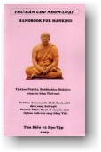

|
BuddhaSasana Home Page |
Vietnamese, with Unicode Times font |
|  |
Thủ bản cho nhơn loại Tỳ-kheo Phật Lệ (Buddhadàsa
Bhikkhu) |
|
[02] Bám chặt và Bấu níu Làm cách nào để lìa xa và hoàn toàn độc lập đối với mọi sự vật vô thường, bất toại nguyện và vô ngã? Câu trả lời là chúng ta phải tìm cho ra điều gì đã làm nguyên nhân khiến chúng ta ham muốn các sự vật ấy và bám níu vào chúng. Biết được nguyên nhân ấy, chúng ta mới có thể loại bỏ hoàn toàn được sự bấu níu. Người Phật tử nhận ra có bốn loại bám níu, hay trìu mến. 1) Sự bám níu do các giác quan (Kamupanana) là sự bám níu vào các đối tượng hấp dẫn và đáng thích của giác quan. Đó là sự tríu mến, thường đuợc chúng ta làm nẩy nở thêm, đối với các sự vật mà chúng ta ưa thích và vừa lòng về màu sắc và thể dạng, âm thanh, mùi hương, vị nếm, xúc chạm; hay các tâm ảnh, các đồ vật ngày xưa, hiện tại hoặc tương lai, khởi lên trong lòng, có thể đó là những sự vật thực tế ở thế giới bên ngoài, hoặc là sản phẩm của sự tưởng tượng. Tự nhiên, chúng ta cảm thấy thích thú, sảng khoái, say đắm sáu loại đối tượng của các giác quan đó. Sáu đối tượng nầy (còn gọi là lục nhập) gợi lên sự sảng khoái và sự say đắm nơi tâm tư của kẻ đang cảm nhận đến. Kể từ khi mới chào đời, con người đã bắt đầu biết đến hương vị của lục nhập (sáu đối tượng các căn, hay các giác quan) và bấu níu vào chúng, rồi theo với thời gian khôn lớn lên, càng ngày càng bị ràng buộc chặt chẽ vào chúng. Con người bình thường chẳng còn đủ năng lực để thoát ra khỏi chúng, và do đó mà lục nhập đã trở thành một vấn đề trọng đại. Rất cần thiết là phải có một kiến thức thật đúng đắn về chúng, và phải có thái độ hành động thật thích nghi đối với chúng, bằng không thì sự bấu níu vào chúng sẽ đưa đến sự phế bỏ hoàn toàn mọi nhiệm vụ một cách trọn vẹn. Nếu chúng ta xét đến hồ sơ bệnh lý của một bịnh nhân phế bỏ mọi trách vụ của y, chúng ta sẽ khám phá ra anh ta sở dĩ sa vào tình trạng đó vì đã quá bám chặt vào một loại đối tượng thích thú của một giác quan nào đó. Thật ra, bất cứ một động tác nhỏ nhặt nào của con người cũng đều bắt nguồn từ sự nhục cảm (sensuality). Cho dầu chúng ta có yêu thương, nổi giận, oán ghét, ganh tị, sát nhơn, hay tự tử đi nữa, nguyên nhân sau rốt vẫn tìm thấy ở nơi một đối tượng nào đó của các căn. Nếu chúng ta điều tra xem điều gì đã thúc đẩy con người đã nỗ lực hoạt động, hoặc làm bất cứ việc gì khác, chúng ta cũng đều nhận thấy rằng đó chính là dục vọng, sự ham muốn để có được sự vật nầy hay sự vật kia. Con người thường gắng sức, học hành, và kiếm ra thật nhiều tiền để rồi sau đó chạy theo các thú vui -- dưới hinh thức thể dạng và màu sắc, âm thanh, mùi hương, vị nếm, và xúc chạm -- các điều đó đeo theo thúc dục anh ta mãi như thế. Ngay cả việc cúng dường làm phước, để được sanh lên cõi Trời, lại cũng bắt nguồn từ sự nhục cảm. Nhìn chung lại thì mọi biến động và xáo trộn trên hoàn cầu đều phát xuất từ sự nhục cảm mà ra cả. Nguy cơ của nhục cảm nằm ngay trong cái ma lực ràng buộc của sự tríu mến về các giác quan. Vì lẽ đó mà Đức Phật đã tuyên bố rằng sự bấu níu vào nhục cảm chính là hình thức quan trọng hàng đầu của sự tríu mến ràng buộc. Nó chính là vấn đề thực sự của hoàn cầu. Thế giới nầy có bị phá huỷ hay không, hay có bất cứ việc gì sẽ xảy ra đi chăng nữa, cũng là do nơi sự bám níu vào chính sự nhục cảm nầy. Bổn phận của chúng ta là phải tự quan sát lấy mình để tìm cho ra các cách nào đã khiến chúng ta đã bị ràng buộc vào nhục cảm, chặt chẽ đến mức nào, và chúng ta có còn đủ năng lực để dẹp bỏ nó được chăng. Đứng trên phương diện thế giới mà nói, thì sự tríu mến vào nhục cảm là một việc tốt đẹp. Vì chính nó đưa đến tình thương trong gia đình, thúc dục sự nỗ lực và chuyên cần theo đuổi sự phồn thịnh và danh tiếng, và v.v. Nhưng nhìn dưới nhãn quan tâm linh thì nó lại được thấy ra như là một cửa ngỏ bí mật đi vào sự đau khổ và dày vò. Đứng trên quan điểm tâm linh mà nói, tríu mến vào nhục cảm là điều ta cần phải chế ngự lại. Và nếu cần phải loại trừ tất cả mọi đau khổ thì trước phải vứt bỏ mọi tríu mến vào nhục cảm hoàn toàn đến tận gốc rễ. 2) Sự bám níu vào các tư tưởng (Ditthupadana). Sự bám níu vào các ý kiến và tư tưởng chẳng quá khó khăn để phát giác và nhận ra chân tướng của chúng, một khi ta đã thực hành đôi chút về nội quán. Kể từ khi chúng ta mới chào đời đến nay, chúng ta được dạy dỗ và huấn luyện, và điều nầy đã làm phát khởi lên các ý kiến và tư tưởng. Nói về các ý kiến ở đây, điều gì nẩy sanh trong đầu ta, ta đều bám chặt lấy và chẳng chịu rời nó bỏ ra. Giữ vững ý kiến và tư tưởng của mình là việc rất tự nhiên và thường chẳng bao giờ bị lên án hay chê trách cả. Nhưng bám chặt vào sự tríu mến các sự việc được ham thích thì cũng chẳng phải là một sự nguy hiểm nhỏ nhoi đâu. Rồi cũng có lúc ta cần phải phá bỏ các thành kiến đã đeo đuổi bướng bỉnh bấy lâu nay. Vì lý do đó, chúng ta cần phải luôn luôn tu chỉnh quan điểm của mình, làm cho chúng được từ từ tốt đẹp hơn, tiến bộ hơn, sửa đổi các quan kiến sai lầm để đưa chúng càng ngày càng gần với Chơn lý, và rốt ráo là để trở thành các quan điểm thật thích hợp với Bốn Thánh đế. Các tư tưởng bướng bỉnh và ngoan cố có nhiều nguồn gốc khác nhau, nhưng phần chính yếu lại có liên hệ ràng buộc với các tập tục, truyền thống, lễ nghi và các giáo điều. Nhưng các định kiến cá nhơn bướng bỉnh chẳng phải là một việc quá quan trọng. Chúng cũng còn ít so với các sự tin tưởng vào các tín ngưỡng bình dân lâu đời về phong tục và lễ tế. Sự dính chặt vào các mê tín đó đã dựa trên sự vô minh. Vì thiếu chánh kiến, nên chúng ta đã làm phát triển thêm các quan điểm cá nhơn của mình về sự vật, căn cứ trên sự vô minh ban sơ của chúng ta. Thí dụ như, chúng ta được thuyết phục rằng mọi sự vật đều đáng ham thích, thường hằng, có giá trị để cho ta bám níu vào, và chúng cũng có một tự ngã riêng; thay vì đúng lý ra, ta nên nhận ra rằng chúng chỉ là ảo ảnh đáng thất vọng, tạm bợ, vô giá trị và khuyết hẳn một tự ngã. Một khi ta đã nghĩ ra vài ý kiến về một sự vật nào, thì tự nhiên ta chẳng thích, về sau nầy, thú nhận rằng chúng ta đã trót lầm lẫn. Ngay cả đôi khi ta thấy mình sai, nhưng vẫn cứ từ chối đâu chịu chấp nhận điều đó. Sự ngoan cố theo lối đó phải được xem như một chướng ngại trọng đại cho sự tiến bộ, khiến ta trở thành bất lực trong việc tự cải thiện, bất lực trong việc thay đổi các sự tin tưởng sai lầm về tôn giáo, và các tín ngưỡng lâu đời. Điều nầy dường như là một vấn đề rất khó khăn cho những ai đang nắm giữ chặt các học thuyết ngây ngô, Mặc dầu về sau, họ nhận thấy ra chỗ ngây ngô, nhưng vẫn từ chối chẳng muốn thay đổi, lấy ly do là cha mẹ, ông bà và tổ tiên họ đã từng giữ các quan kiến ấy. Hoặc là nếu họ chẳng quan tâm đến việc sửa đổi hay để tự cải tiến mình, thì họ lại gạt bỏ hết mọi luận cứ chống lại các ý kiến cũ rích của họ, bằng cách nhấn mạnh đấy chính là những điều mà họ đã tin tưởng xưa nay. Chính vì các lý lẽ đó mà sự chấp chặt vào các tư tưởng được xem như là một lậu hoặc nguy hiểm, trọng đại, mà nếu chúng ta còn muốn tự cải thiện mình thì phải nỗ lực để tận trừ. 3) Bám chặt vào các nghi thức và các hình thức tế lễ (Silabbatupadana, Giới cấm thủ ). Đây là sự bám níu vào các tập tục cổ hủ đã được trao truyền lại tự ngàn xưa mà nay người đời xem như thiêng liêng chẳng dám sửa đổi trong bất cứ trường hợp nào. Ở Thái lan, cũng chẳng phải là ít có các tập tục đó hơn nơi khác: nào là bùa phái, nào là linh vật, và các hình thức bí thuật đủ loại. Lại còn có những sự tin tưởng như, mỗi sáng thức dậy, phải đọc chú ngữ thần bí lên trên gáo nước để rửa mặt; (...) trước khi ăn cơm hay trước khi đi ngủ còn có các nghi thức khác nữa; có các tin tưởng về các hồn linh, các bực Trời, các cây thiêng và các tà vật. Các sự việc đó hoàn toàn vô lý. Họ chẳng chịu suy nghĩ cho hợp lý, họ cứ đơn giản bám níu vào các thể thức đã được thiết lập sẵn. Họ đã thực hành luôn luôn theo cách đó, nên chẳng chịu sửa đổi. Nhiều người tuyên bố mình là Phật tử mà cũng bám níu vào các sự tin tưởng như thế, (...) và trong số đó cũng có cả vài vị tự xưng là Tỳ-kheo, đệ tử của Đức Phật nữa. Các học thuyết tôn giáo đặt niềm tin vào thần linh, thiên thần và các linh vật đều có khuynh hướng nghiêng về các loại tin tưởng như thế. Và lý lẽ nào đã khiến tại sao ta vẫn còn chưa hoàn toàn thoát ra khỏi tình trạng đó? Lý do tại sao chúng ta cần phải thoát khỏi các tà kiến đó, là nếu chúng ta thực tập bất cứ một khiá cạnh nào của Phật pháp mà còn chưa thông hiểu về mục đích nguyên thủy của nó, còn chưa ý thức được lý do căn bản của nó, thì kết quả bó buộc sẽ là một sự phỏng định ngây thơ, điên rồ rằng đó là một cái gì có bí thuật. Vì vậy nên chúng ta thường thấy nhiều người tuân theo các châm ngôn đạo đức hoặc tu tập theo Phật pháp, cũng chỉ đơn thuần và giản dị là để giữ đúng các thể thức được chấp nhận từ lâu, hoặc các truyền thống lễ nghi xưa, hay võn vẹn chỉ để noi theo các hình thức được trao truyền lại. Họ chẳng biết chút nào về lý do căn bản của các sự việc đó, họ chỉ làm theo dưới sự thúc đẩy của thói quen mà thôi. Một sự bám níu chặt chẽ như thế rất khó mà chấn chỉnh lại. Sự bám chặt vô ý thức vào các tập tục truyền thống như thế chỉ có nghiã là như vậy mà thôi. Thiền minh sát hoặc sự nội quán trầm lặng như được thông dụng ngày nay, nếu được thực tập mà chẳng thấu triệt được ý nghiã căn bản và mục tiêu thật sự của chúng, thì bó buôc là đã được thúc đẩy bởi sự bám chặt và bấu níu rất lạc hướng, và cũng chỉ là một hình thức điên rồ nào đó. Và ngay cả việc giữ giới luật, như ngũ giớì, bát giới, thập giới, hay là thật nhiều giới luật đi nữa, nếu được thọ trì với sự tin tưởng là sẽ được trở thành một nhân vật siêu việt, thần thánh có đầy đủ thần thông hoặc các quyền năng khác, thì hoá ra cũng chỉ là một lề lối cổ hủ, làm theo thói quen, được thúc đẩy giản dị bởi sự bám chặt và bấu níu vào các thông lệ cùng nghi thức mà thôi. Thật là cần thiết cho chúng ta phải nên hết sức thận trọng. Sự thực tập theo Phật pháp phải được đặt trên một căn bản lành mạnh về tư tưởng và kiến thức, với ước vọng để tận diệt các phiền não. Bằng không thì đó là sự điên rồ, lạc hướng, hoàn toàn vô lý và chỉ là một sự phí thì giờ. 4) Bám níu vào ý tưởng tự ngã (Attavadupadana). Sự tin tưởng vào tự ngã là một điều rất quan trọng và được ẩn kín vô cùng khéo léo. Bất cứ một sanh vật nào cũng bó buộc phải có ý tưởng sai lầm về "Ta" và về "của Ta"(ngã và ngã sở ). Đó là một bản năng căn bản đầu tiên của mọi sanh vật, và làm nền tảng cho tất cả các bản năng khác. Thí dụ như, bản năng đi tìm thực phẩm để ăn, bản năng biết tránh xa các nguy hiểm, bản năng sanh con đẻ cháu, và nhiều bản năng khác nữa, đều khởi nguyên từ sự ý thức rất tự nhiên về sự tin tưởng vào một cái "Ta"của chính mình. Tin chắc trước hơn hết vào chính tự ngã riêng của mình, sanh vật ấy tự nhiên mong muốn tránh sự chết, đi tìm thực phẩm để nuôi thân, tầm cầu sự an toàn, và sự sanh sôi nẩy nở cho chủng loại của mình. Một sự tin tưởng vào tự ngã như thế trở nên phổ quát và hằng hiện hữu nơi mọi sanh vật. Nếu đã chẳng đúng như thế thì các sanh vật chẳng thể nào sống sót được. Tuy nhiên, sự tin tưởng đó cũng đồng thời gây nên sư đau khổ trong việc đi tìm thực phẩm và nơi ẩn trú, trong việc truyền bá chủng loại, hay bất cừ hoạt động nào. Đó là một trong các lý do tại sao Đức Phật đã dạy rằng sự bám chặt vào ngã kiến là nguyên nhân gốc rễ của tất cả mọi khổ đau. Ngài đã tóm tắt điều đó lại rất ngắn gọn như sau: "Mọi sự vật, nếu bám chặt vào, là đau khổ, hoặc là nguồn gốc của đau khổ." Sự bám chặt đó là nguồn gốc và nền tảng của cuộc sống, và đồng thời là nguồn gốc và nền tảng của sự đau khổ dưới mọi hình thức. Chính đó đã là sự kiện mà Đức Phật đã nhắc đến khi Ngài tuyên bố, cuộc sống là đau khổ và đau khổ là cuộc sống. Điều đó có nghiã là thân và tâm nầy (năm uẩn) đang bám chặt vào nhau, đó chính là đau khổ. Sự hiểu biết về nguồn gốc và nền tảng của cuộc sống và của đau khổ cần nên được xem như là sự hiểu biết thật thâm sâu và thấm thía nhứt, bởi vì sự hiểu biết đó đưa ta đến một vị thế khả dĩ loại trừ được hoàn toàn sự đau khổ. Chút hiểu biết đó xứng đáng để đòi hỏi được công nhận là một giáo lý có một không hai riêng của Phật giáo. Điều đó còn chưa thấy được giảng dạy trong bất cứ tôn giáo nào khác trên thế giới. Đường lối hiệu nghiệm nhứt để đối phó với sự bấu níu là nhận diện ra nó mỗi khi nó có mặt. Cách đó rất thích ứng, nhứt là để phá bỏ sự chấp thủ vào ngã kiến, mà chính ngã kiến nầy lại làm nền tảng cho cuộc sống. Nó cũng như một "cái gì" đã tự mình khởi sanh lên, tự tiện vào an trú trong ta. Nó hiện diện như một bản năng nơi trẻ con và súc vật con, ngay từ khi mới sanh ra. Súc vật con, như mèo con chẳng hạn, biết giữ tư thế tự phòng thủ cách nào rồi, mỗi khi chúng ta đến gần nó. Luôn luôn sẵn có một cái gì, cái "tự ngã"hiện diện bên trong tâm, và lẽ tất nhiên, sự tríu mến bó buộc phải tỏ lộ ra. Chỉ có mỗi một việc có thể làm được là phải kềm thúc nó lại, càng nhiều càng tốt, cho đến khi nào ta đã tiến khá xa về các kiến thức tâm linh; nói cách khác, là đem áp dụng các nguyên lý Phật giáo cho đến khi nào mà cái bản năng đó đã bị đánh bại và hoàn toàn bị loại trừ. Cho đến khi nào con người vẫn còn là con người của thế tục, thì bản năng ấy vẫn còn chưa bị khuất phục. Chỉ có bực Thánh nhơn thật cao, các vị A la hán, mới thành công trong việc đánh bại nó. Chúng ta phải thừa nhận rằng, đó chẳng phải là việc kém quan trọng; mà là một vấn đề trọng đại chung cho tất cả mọi sanh vật. Nếu chúng ta muốn trở nên người Phật tử chân chánh, nếu chúng ta muốn rút tiả những lợi lạc trong giáo lý, thì bổn phận của chúng ta là phải khởi sự ngay việc khuất phục tà niệm nầy. Đau khổ mà chúng ta đang phải gánh chịu nhờ đó mà giảm bớt theo. Biết được chơn lý về các sự vật ấy, vốn là mối quan tâm hằng ngày cho mọi người trong chúng ta, là phải xem sự hiểu biết đó như là một trong các đặc ân sâu rộng nhứt, là một trong các thiện xảo to lớn nhứt. Hãy suy gẫm về vấn đề bốn sự chấp chặt đó, ghi đậm vào tâm khảm rằng chẳng có bất cứ sự vật nào đáng cho ta bám níu, rằng do bản thể của muôn pháp chẳng có bất cứ sự vật nào đáng để có hoặc để trở thành cả, rằng sở dĩ chúng ta hoàn toàn bị lệ thuộc vào muôn pháp, cũng chỉ vì đó là hậu quả của bốn loại cố chấp. Giờ chỉ còn việc cần làm là chúng ta phải quan sát thật kỹ lưỡng và hiểu biết thật rõ ràng về tánh chất hết sức nguy hiểm và độc nhiễm của sự vật. Bản chất gây tổn hại của chúng còn chưa được nom thấy rõ ràng, cũng như trường hợp các ngọn lửa bùng cháy, các võ khí hay các độc dược. Chúng khéo được ngụy trang xem như xinh đẹp, du dương, thơm tho, ngọt ngào, mềm dịu, và quyến rũ. Dưới các hình dạng đó, sự vật rất khó cho ta nhận chân ra và ứng phó cho đúng. Vì thế, chúng ta cần phải biết ứng dụng các kiến thức mà Đức Phật đã trang bị cho chúng ta. Chúng ta phải kiểm soát sự bám níu thiếu khôn khéo đó và khuất phục nó bằng mãnh lực của Trí huệ. Làm được như thế, chúng ta mới có đầy đủ điều kiện thuận tiện để tổ chức cuộc đời chúng ta theo cách nào mà tránh được mọi nỗi khổ đau, giải thoát khỏi cả các tàn tích thật nhỏ nhiệm của sự đau khổ. Chúng ta sẽ có đủ khả năng để hoạt động và sanh sống an lành trong hoàn vũ, vì đã diệt trừ xong các lậu hoặc, giác ngộ và an lạc. Giờ đây, xin tóm tắt lại. Bốn hình thức cố chấp chính là vấn đề duy nhứt mà hàng Phật tử, hay người đời, muốn biết rõ về Phật giáo, phải cần thông suốt đến. Mục tiêu của đời sống thánh thiện (Brahmacariya) trong Phật giáo là khiến cho tâm thức có đủ khả năng để dẹp bỏ sự nắm bắt vụng về đó. Bạn có thể tìm thấy lời dạy nầy nơi bất cứ bài giảng pháp nào trong kinh điển luận bàn về sự chứng đắc đạo quả A la hán. Từ ngữ thường được dùng là "Tâm thức thoát khỏi sự cố chấp". Đó là điều rốt ráo. Khi tâm tư đã được hoàn toàn giải thoát khỏi sự chấp chặt, thì chẳng còn bất cứ điều gì nữa có thể ràng buộc tâm tư ấy để biến nó trở thành nô lệ của thế giới. Cũng chẳng còn gì để khiến tâm tư ấy cứ quay cuồng mãi theo các chu kỳ sống và chết, và trọn cả tiến trình sanh tử đã tới mức đứng dừng lại; hay nói đúng ra, đã trở nên siêu thế, hoàn toàn tự do thoát khỏi thế giới. Vậy thì, sự vứt bỏ các chấp thủ vụng về kia chính là chìa khoá của việc tu tập trong Phật giáo. -ooOoo- Ba môn học vô lậu Trong Chương nầy, chúng ta sẽ cứu xét phương pháp được dùng để loại trừ sự bám níu (cố chấp). Phương pháp ấy căn cứ trên ba giai đoạn thực tập: Giới, Định, và Huệ, thường được biết đến dưới một danh xưng chung là Ba Môn Học Vô Lậu. Giai đoạn thứ nhứt là Giới (Sila). Giới giản dị chỉ là thái độ thích hợp, thái độ hành động phù hợp với các tiêu chuẩn chung thường được chấp nhận và chẳng hề gây nên sự khốn khổ cho kẻ khác hay cho chính mình. Nó được san định dưới hình thức Ngũ Giới, Bát Giới hay Thập Giới, hay thành 227 điều, hoặc thành nhiều cách khác. Nó được thực hành bằng động tác của thân, bằng lời nói của miệng, nhắm mục đích tạo nên sự an hoà, thuận lợi và tránh hẳn các hậu quả bất lợi trên bình diện căn bản nhứt. Nó liên quan đến mọi thành phần trong xã hội và đến các sự vật sở hữu cần thiết cho đời sống. Phương diện thứ hai của Ba Môn Học Vô Lậu là Định. (Samadhi). Định học cốt ở sự bó buộc tâm thức phải luôn luôn ở vào một tình trạng khả dĩ giúp cho sự thành công của bất cứ việc nào mà tâm thức ấy mong muốn thực hiện được. Định lực là gì? Chắc chắn là phần đông các bạn đã hiểu định lực như thể là một tâm tư hoàn toàn lắng yên và bất động tựa như một khúc cây. Nhưng hai đặc điểm:lắng yên và bất động đó còn chưa phải là cái nghiã chân thực của chữ Định. Nghiã nầy đã được chính Đức Phật thốt lên trong một lời tuyên bố. Ngài mô tả định tâm như là một tâm tư sẵn sàng thích nghi với công việc (Kammaniya), trong một trạng thái thuận tiện cho việc thi hành công tác của nó. Từ ngữ "thích nghi với công việc" được xem như đã mô tả khéo léo nhứt một định tâm đúng đắn. Phương diện thứ ba là sự đào luyện Trí Huệ (Panna, Bát nhã), sự thực tập và thao dượt khiến làm phát sanh, đến mức tối đa, các tri kiến chơn chánh và đứng đắn về bản thể chân thực của muôn pháp. Thông thường, chúng ta chưa có đủ khả năng để thấu rõ bản thể chân thực của bất cứ sự vật nào cả. Phần lớn, chúng ta hoặc bám chặt vào các ý kiến riêng của chúng ta, hoặc chạy theo dư luận của dân chúng, khiến cho những gì chúng ta nhận thấy ra được còn chưa đúng với Chơn lý chút nào. Vì lý do nầy mà sự thực tập trong Phật giáo mới gồm có sự huấn luyện về Trí Huệ, phương diện cuối cùng của Ba Môn Học Vô Lậu sở dĩ được đặt ra là để làm khởi lên đầy đủ kiến thức và trí huệ về bản thể chân thực của muôn pháp. Trong bối cảnh của tôn giáo, kiến thức và trí huệ chẳng thể nào được xem cùng là một thứ như nhau. Kiến thức tùy thuộc phần nào vào sự xử dụng lý luận, vào sự hợp lý của trí năng. Trí huệ còn đi xa hơn thế nữa. Khi một sự vật được Trí huệ biết đến, thì nó đã được thấm nhập vào, xuyên thấu qua, và được đặt vào cái thế diện đối diện; và tâm thức thì đi sâu vào trong đối tượng, qua sự quán sát và truy tầm thật dai dẳng cho đến mức phải khởi lên một sự bừng tỉnh về sự vật đó, tuy bất thuận lý nhưng chân thành và đích thực, hoàn toàn chẳng đượm một chút tình cảm nào còn vướng vít vào đó. Lẽ tất nhiên, sự huấn luyện trong Phật giáo chẳng quy chiếu vào loại kiến thức trí năng thường thấy ngày nay trong các giới hàn lâm, học viện, nơi mà mỗi cá nhơn cứ giữ lấy quan điểm riêng của mình về chơn lý. Trí huệ Phật giáo phải là trực giác, rõ ràng và tức khắc, kết quả của việc đã thấm nhập vào đối tượng, bằng cách nầy hay cách khác, cho đến khi sự thấm nhập ấy tạo nên trong tâm thức một cảm tưởng xác định và chẳng thể xoá mờ được. Vì lý do nầy nên các đối tượng của việc quán chiếu trong Huệ học phải là những sự vật mà con người được tiếp xúc đến trong đời sống hằng ngày, hoặc ít nhứt là những sự vật có đủ tầm quan trọng để khiến cho tâm trí thực sự trở nên chán ngấy và bừng tỉnh lên để thấy chúng đều vô thường, bất toại nguyện và vô ngã. Cho dẫu có thật nhiều kiến thức đến mức nào đi nữa, mà chúng ta cứ thuận lý nghĩ suy, đánh giá các đặc tướng về vô thường, bất toại nguyện và vô ngã, thì kết quả cũng chẳng gì khác hơn là một kiến thức trí năng. Chẳng thể làm sao mà phát khởi lên sự bừng tỉnh và vỡ mộng đối với các sự vật của thế tục. Cần phải hiểu rằng sự bừng tỉnh đó, đã thay thế cho cái khát vọng say đắm sự vật hấp dẫn, lại chính là thành phần đã tạo nên sự tỉnh giác. Như một sự kiện của thiên nhiên, sự hiện diện của một sự tỉnh thức chân thực và rõ ràng, hàm súc sự có mặt của nỗi vỡ mộng thật tình. Chẳng có thể nào khiến cho tiến trình đó ngưng ngang lại ở tại điểm tỉnh thức rõ ràng ấy. Sự vỡ mộng đẩy lùi khát vọng về các sự vật và bó buộc phải xảy ra ngay lập tức. Giới học chỉ giản dị là sự huấn luyện sơ đẳng khiến ta có đủ khả năng để sống vui và giúp cho tâm trí được ổn định. Giới học đem đến nhiều lợi ích, và quan trọng nhứt là sự chuẩn bị cho con đường đi đến định lực. Các lợi ích khác, như đem đến hạnh phước hoặc được tái sanh lên cõi Trời, còn chưa được Đức Phật xem như là mục đích trực tiếp của Giới học. Ngài xem Giới học như chủ yếu trong việc làm khởi lên và phát triển định lực. Chừng nào vẫn còn các sự vật khuấy rối tâm tư thì chừng ấy tâm tư đó vẫn chưa đạt được định lực. Định học gồm có sự phát triển khả năng kiểm soát tâm thức, biết xử dụng nó, khiến nó thi hành công việc của nó được nhiều thắng lợi nhứt. Giới học là thái độ đứng đắn về thân và lời nói; còn định học là thái độ đứng đắn về phương diện tâm thức và là hoa quả của sự tu tập miệt mài về phần tâm linh và của kỷ luật. Một tâm tư an định thì vắng bóng mọi điều ác, mọi vọng tưởng, và chẳng chạy lang bang lià khỏi đối tượng. Định tâm ấy thích ứng với công việc của nó. Ngay cả về các việc thông thường ở thế gian, định tâm cũng vẫn là một sự cần thiết. Bất kỳ việc nào ta đang nhúng tay vào, ta chẳng thể nào hoàn thành việc đó một cách mỹ mãn, trừ phi có được định tâm. Bởi lý do đó, Đức Phật mới coi định tâm là biểu hiệu của bực vĩ nhơn. Chẳng kể là với những sự việc của thế gian, hay là với các vấn đề tâm linh, khả năng có được định lực là tuyệt đối cần thiết. Lấy thí dụ một cậu học trò; nếu thiếu định tâm, cậu ta có thể làm nổi bài toán về số học không? Định tâm để làm được bài toán số học là một định tâm tự nhiên, chỉ được phát triển ở mức sơ sài thôi. Định tâm như một yếu tố căn bản trong việc tu tập theo Phật giáo, điều mà chúng ta đang bàn luận ở đây, là định tâm đã được tập luyện đến một trình độ cao hơn cái định tâm tự nhiên, thông thường kia. Lẽ tất nhiên, khi tâm thức đã được tập luyện thành công rồi thì sẽ có được rất nhiều khả năng, quyền lực và thuộc tính. Người nào tìm cách khai thác được các lợi lạc đó từ nơi định tâm, có thể được xem như đã tiến khá xa trong sự hiểu biết các bí ẩn của thiên nhiên. Vị ấy biết làm cách nào để kiểm soát tâm tư của mình, và do đó, có những khả năng mà con người trung bình còn chưa có được. Sự hoàn hảo của Giới học nằm trong khả năng của người thường và nếu được phô trương ra, cũng chẳng bao giờ là một sự biểu dương của một bực siêu nhân. Mặt khác, một người đã đắc được định tâm ở mức thâm viễn thì lại được Đức Phật xem như đã có được khả năng siêu phàm, điều mà các vị Tỳ-kheo chẳng bao giờ phô trương ra. Kẻ nào phô trương cái khả năng đó ra thì hết còn là một vị Tỳ-kheo tốt; hơn thế nữa, chẳng còn xứng danh là Tỳ-kheo. Để đạt tới định tâm, cần phải có nhiều sự hy sinh. Ta cần phải gánh chịu nhiều nỗi thử thách cam go, phải nỗ lực tập luyện v à thực hành cho đến khi đạt được một trình độ định lực thích hợp với khả năng của ta. Và rốt cuộc, ta sẽ thành tựu được nhiều kết quả khả quan trong các công việc của ta hơn những người thường, giản dị chỉ vì nhờ có thêm được nhiều khí cụ, phương tiện, cho ta xử dụng. Vậy thì, bạn nên tìm thấy sự thích thú trong vấn đề định lực và chớ nên xem đấy là một cái gì cổ hủ, điên rồ. Đó là một vấn đề quả thật có tầm quan trọng vô cùng lớn lao, một điều đáng được đem ra ứng dụng vào mọi thời, nhứt là vào thời buổi nầy khi mà thế giới đang quay cuồng quá nhanh chóng đến mức như sắp biến thành khói lửa. Hiện giờ lại cần phải có nhiều định lực, cần hơn cả vào thời Đức Phật còn tại thế gian nầy. Chớ bao giờ nghĩ đấy là việc dành riêng cho các vị đang tu trong chùa, hoặc cho những người kỳ chướng!Đến đây, ta bước sang điểm li ên hệ giữa Định học và Huệ học. Đức Phật có nói, một khi tâm tư đã vào định, thì nó đang ở trong vị thế thuận tiện để nhìn thấy muôn vật như chúng đang là như thế. Khi tâm đã định và thích hợp với hoạt động của nó, thì tâm ấy sẽ biết được bản thể thực sự của muôn pháp. Kể ra thì cũng lạ lùng, giải pháp cho bất cứ vấn đề nào cũng đã nằm sẵn, tuy bị che khuất, ngay chính trong tâm của người đang tìm cách giải quyết nó. Anh ta còn chưa ý thức ra việc ấy, bởi vì giải pháp đó còn trong tiềm thức; và cho đến chừng nào anh còn lo bắt đầu giải quyết vấn đề, thì giải pháp vẫn chưa tìm đến, cũng chỉ vì tâm tư anh ta, vào lúc ấy, còn chưa ở vào một vị thế thích nghi để giải quyết vấn đề. Nếu khi khởi đầu bất cứ một công việc trí óc nào mà một người biết phát khởi chánh định, tức là, nếu anh ta biết làm sao cho tâm trí mình thích nghi để hoạt động, thì giải pháp cho bài toán, tự nó, sẽ đến với anh. Ngay lúc tâm tư tập trung vào định lực, giải pháp của vấn đề tự nhiên lọt ra ngay, vào đúng chỗ. Nhưng nếu giải pháp còn chưa chịu tìm đến, thì ta vẫn có một phương pháp khác để lèo lái tâm trí ta hướng về sự cứu xét vấn đề, đó là sự thực tập về nội quán với định lực, được mệnh danh là Huệ học. Vào ngày đắc quả vị Chánh đẳng giác, Đức Phật đã đưa Trí huệ chiếu soi và thâm nhập vào Định lý Thập Nhị Nhân Duyên, tức là Ngài đã đạt đến mức cảm nhận hoàn toàn về bản thể thực sự của muôn pháp, hay là "cái gì thực sự là cái gì", cùng chuỗi dài thứ tự theo đó muôn pháp lần lượt khởi lên; và y như là kết quả của một sự tập trung tâm ý vào định lực theo đường lối mà chúng ta vừa mô tả. Đức Phật đã thuật lại câu chuyện nầy rất tỉ mỉ, nhưng ta có thể tóm tắt đại lược như vầy: vừa khi tâm trí Ngài nhập vào đại định, thì tâm trí ấy đang ở trong một vị thế khả dĩ thâm cứu vấn đề.Chính đúng vào lúc tâm thức trở nên yên tịnh và thanh lương, trong một trạng thái thoải mái, chẳng bị khuấy rối, được tập trung khéo léo và tươi mát, thì liền đó, giải pháp cho cái vấn đề dai dẳng bấy lâu nay lại chợt đến. Trí huệ thường tùy thuộc vào định lực, mặc dầu có thể chúng ta còn chưa hề để ý thấy sự kiện nầy. Thực ra, Đức Phật đã từng chứng minh sự liên hệ, còn mật thiết hơn thế nữa, giữa định lực và trí huệ. Ngài lưu ý chúng ta rằng định lực cần thiết cho trí huệ, và rằng trí huệ, rất cần thiết cho định lực ở một cường độ cao hơn mức thông thường, lại đòi hỏi thêm sự thông hiểu về các đặc tánh của tâm thức. Ta cần phải nên biết rõ theo cách nào mà tâm thức đã được kiểm soát để có thể đưa đến định lực. Vậy, càng có trí huệ cao chừng nào, ta càng có khả năng đạt đến định lực càng thâm sâu hơn chừng nấy. Cùng thế đó, một sự gia tăng về định lực kéo theo sự gia tăng về trí huệ; yếu tố nầy làm tăng thêm yếu tố kia. Trí huệ hàm ý một quan kiến chẳng bị che mờ, và lẽ tất nhiên, một sự vỡ mộng và chán ngấy. Trí huệ đưa đến kết quả là có một sự lùi xa ra khỏi mọi sự vật mà trước kia ta đã đắm say một cách điên cuồng. Nếu một người đã có trí huệ mà vẫn còn chạy đuổi theo sự vật, điên rồ thèm khát chúng, bám chặt và bấu níu vào chúng, mê đắm chúng, thì đó chẳng thể nào gọi là trí huệ theo nghiã của Phật giáo. Sự khựng lại và lùi xa ra, vừa được nói đến, nào phải chỉ là một động tác vật lý thôi đâu. Thật ra, chẳng có ai cứ chụp lấy mọi vật để rồi quẳng chúng đi, hoặc đạp nát chúng ra từng mảnh, cũng lại chẳng có người nào lại từ bỏ tất cả để vào sống trong rừng. Nhưng đấy còn chưa phải là ý nghiã được nói đến. Ở đây, chúng ta muốn đặc biệt nhắc tới một sự dừng khựng lại và lùi dang xa ra của tâm linh, như là hệ quả của một tâm tư đã chấm dứt được tình trạng nô lệ vào sự vật mà trở nên hoàn toàn tự do. Điều đó cũng giống như khi một khát vọng nhường bước cho sự vỡ mộng. Nó chẳng phải là sự đâm đầu bổ đi tự tử, hoặc buông xuôi hết mọi sự để vào trong rừng thành một ẩn sĩ, hay là châm lửa đốt cháy tiêu hết cả. Trông bề ngoài, người ấy chẳng có thay đổi chi, vẫn như cũ, giữ thái độ bình thường đối với mọi sự vật. Nhưng bên trong, có một sự khác biệt. Tâm tư trở nên độc lập, chẳng còn lệ thuộc vào sự vật nữa. Đấy chính là một công đức của trí huệ. Đức Phật gọi đó là hiệu quả của sự Giải thoát, vượt ra khỏi vòng nô lệ vào muôn vật, nhứt là vào các sự vật mà chúng ta ham thích. Thật ra, chúng ta cũng bị lệ thuộc cả vào các sự vật mà chúng ta chán ghét. Chúng ta bị lệ thuộc vào các sự vật sau nầy trong chừng mực nào mà chúng ta còn chẳng thể chẳng chán ghét chúng, và chẳng thể giữ được thái độ dửng dưng đối với chúng. Khi chán ghét sự vật, ta trở nên động tâm, xúc cảm vì chúng. Cơ hồ như chúng "khéo vận dụng" để kiểm soát chúng ta, như cung cách mà các sự vật được ham thích đã thu hút và ảnh hưởng đến chúng ta, mỗi người một cách khác. Cho nên, từ ngữ "nô lệ cho sự vật" trỏ vào các thái độ phản ứng khi thương, và khi ghét nữa. Các điều nầy cho thấy, bằng phương cách Trí huệ, ta có thể thoát khỏi vòng nô lệ vào các sự vật để có được tự do. Đức Phật đã tóm tắt nguyên tắc nầy thật ngắn gọn như sau: "Trí huệ là phương cách để tự thanh lọc". Ngài chẳng bảo rõ, Giới học hay Định học như phương cách để thanh lọc thân tâm, nhưng Ngài nhấn mạnh rằng Huệ học giúp chúng ta giải thoát khỏi các sự vật. Khi còn nô lệ cho sự vật, thì con người còn uế trược, ô nhiễm, đam mê, cuồng vọng. Một khi đã được tự tại, con người trở thành thanh tịnh, vô cấu nhiễm, giác ngộ, an lạc. Đó là hoa quả của Trí huệ, tình trạng tiếp theo sau, một khi Huệ học đã làm tròn xong sứ mạng của mình. Hãy nhìn kỹ vào yếu tố nầy, Huệ học, khía cạnh thứ ba của Ba Môn Học Vô Lậu. Khi đã thông hiểu rõ môn học đó, bạn sẽ thấy ra nó là một công đức cao cả nhứt. Trí huệ trong Phật học là cái trí huệ kết quả của sự lùi ra xa khỏi các sư vật, sau khi đã tận diệt hoàn toàn bốn loại bám níu. Bốn loại cố chấp nầy là những sợi dây thừng trói buộc chặt chúng ta lại, còn trí huệ chính là con dao sắc bén đã cắt đứt được các dây ràng buộc đó để giải thoát cho chúng ta. Khi bốn sự cố chấp đã biến mất rồi thì chẳng còn gì để cột thắt chúng ta vào các sự vật nữa. Ba Môn Học Vô Lậu có đứng vững được trước sự trắc nghiệm chăng? Ba môn đó có đặt trên một nền tảng lành mạnh và thích hợp để mọi người thực tập không? Ta hãy cứu xét chúng. Khi bạn đã nhìn lại chúng một lần nữa, bạn sẽ thấy cả ba yếu tố đó chẳng hề chống đối với giáo lý của một tôn giáo nào, dĩ nhiên với sự phỏng định là tôn giáo ấy có mục tiêu chánh yếu nhắm vào sự cứu vãn căn bịnh trầm kha của nhơn loại là đau khổ. Giáo lý của Đức Phật chẳng hề xung đột với bất cứ tôn giáo nào, lại còn đem đến vài điều mà chẳng tôn giáo nào có. Đặc biệt l à Phật giáo có sự thực tập về trí huệ, một kỹ thuật cao tột để loại trừ bốn sự cố chấp. Trí huệ giải thoát cho tâm thức, khiến nó trở nên độc lập và dứt khoát chẳng thể để cho bị trói buộc lại, bị lệ thuộc, bị khuất phục vào bất cứ điều chi, kể cả đối với Thượng đế trên Thiên đàng, các vị Trời hay thần linh. Chẳng có tôn giáo nào sẵn sàng để cho một cá nhân có đầy đủ tự do hoàn toàn, hoặc là dạy bảo cá nhân đó chỉ nên tự mình nương tựa vào chính mình mà thôi. Chúng ta phải nên hoàn toàn ý thức rõ về điều nầy: nguyên lý tự mình nương tựa vào chính mình là nét độc đáo đặc sắc nhứt của Phật giáo.Khi chúng ta đã thấy rõ, Phật giáo có đủ những gì các tôn giáo khác đã có, và còn có nhiều điều mà chẳng tôn giáo nào có được, thì chúng ta sẽ nhận chân ra rằng Phật giáo là để cho tất cả mọi người. Phật giáo là một tôn giáo phổ quát. Mọi người đều có thể tu tập theo Phật giáo, ở mọi lứa tuổi và vào mọi thời đại. Con người ở khắp nơi đều có chung một vấn đề là giải thoát khỏi đau khổ, các nỗi đau khổ dính liền với sanh, già, bịnh và chết; đau khổ do tham vọng và bám níu. Tất cả, chẳng trừ riêng ai ra cả, Trời, người, hay thú vật, đều có chung một vấn đề, chung một trách vụ: loại trừ hoàn toàn các tham vọng, dẹp bỏ sự bám níu chẳng chút khéo léo đó, tức là nguồn gốc của đau khổ. Vì lẽ ấy, Phật giáo là một tôn giáo phổ quát. -ooOoo- Sự vật ta bám níu Ta bám níu sự vật nào? Ta vịn vào đâu để bám níu? Ta bám níu vào thế giới. Trong Phật giáo, chữ thế giới được gọi là pháp giới, có nghiã rộng rãi hơn chữ thế giới thường dùng. Chữ ấy trỏ vào các sự vật, toàn thể tất cả sự vật (còn gọi là muôn pháp). Nó chẳng phải chỉ nói đến nhơn loại, hay các bực Trời, các Phạm thiên, hay loài súc sanh, hoặc các qủi sứ dưới điạ ngục, hay các ác thần, các ngạ qủi, các nhân vật khổng lồ, hoặc bất cứ cõi hiện hữu nào khác. Chữ pháp giới ở đây bao gồm chung lại hết tất cả muôn sự vật. Biết được cả pháp giới là điều rất khó khăn, vì còn có nhiều cảnh giới đang ẩn khuất. Phần đông chúng ta chỉ quen biết được với lớp vỏ bên ngoài, ở giai tầng của chơn lý tương đối, xứng hợp với trí thức con người trung bình. Vì lẽ đó nên Phật giáo mới dạy ta về các cõi trong pháp giới. Đức Phật theo một phương pháp giáo dục l à phân chia thế giới ra hai bình diện: vật chất và phi vật chất. Kế đó, Ngài tế phân bình diện phi vật chất, tức là cảnh giới tinh thần của tâm thức, ra thành bốn yếu tố. Nếu kể chung lại, hai phần vật chất và tâm linh thì có tất cả năm yếu tố, được Đức Phật mệnh danh là Ngũ Uẩn, hội nhau lại lập thành thế giới, đặc biệt là mọi sanh vật (còn được gọi là chúng sanh) và chính con người nữa. Khi nói đến pháp giới, chúng ta chú trọng đến thế giới các loài chúng sanh, và nhứt là về con người, vì con người mới là vấn đề chánh yếu. Nơi con người, năm yếu tố đó đều có mặt chung với nhau: tấm thân vật chất là sắc uẩn và phương diện tâm linh được chia ra làm bốn uẩn còn lại, mà chúng ta sắp mô tả đến.Yếu tố tâm linh thứ nhứt là thọ uẩn (Vedana), gồm có ba loại cảm thọ: cảm thọ sung sướng gọi là lạc thọ, cảm thọ đau khổ gọi là khổ thọ, và cảm thọ trung hoà, gọi là xả thọ, tuy chẳng sướng chẳng khổ nhưng vẫn là một cảm thọ. Trong các điều kiện bình thường, lúc nào cảm thọ cũng có mặt nơi chúng ta. Mỗi ngày chúng ta đều tràn đầy các cảm thọ nên Đức Phật chỉ cho thấy rằng cảm thọ là một trong các thành phần kết hợp nhau lại mà thành con người. Thành tố thứ hai của tâm tư là tri giác, được gọi là tưởng uẩn (Sanna). Đây là cái tiến trình để hay biết, giống như vừa thức giấc tỉnh dậy, nó ngược lại với sự vô ý thức hoặc khi đã chết. Tưởng uẩn trỏ vào ký ức, cũng như chỉ đến sự hay biết các cảm tưởng về giác quan, bao gồm cả các cảm giác ban sơ và luôn cả các cảm giác trước kia nay được nhớ lại. Như thế, ta có thể trực tiếp hay biết về một vật, trắng hay đen, dài hay ngắn, con người hay thú vật, và vân vân, hoặc là ta có thể hay biết giống như vậy về các sự vật được hồi tưởng lại qua ký ức. Thành tố thứ ba của tâm tư là hành uẩn (Sankhara), tức là sự tác động tư duy nơi một cá nhơn đang suy nghĩ để làm một việc gì, hay để nói lên lời nào, hoặc các ý nghĩ tốt, xấu, các tư tưởng quyết ý, các ý muốn tích cực, đấy là khối tập hợp (uẩn) thứ ba trong tâm tư. Thành tố thứ tư của tâm tư là thức uẩn (Vinnana). Thức uẩn là công năng của sự hiểu biết về các vật đối tượng xuyên qua các ngõ của mắt, tai, mũi, lưỡi, thân và ý. Năm uẩn đó tạo thành một môi trường hoạt động cho bốn sự bám níu (cố chấp) đã được giải thích trong Chương thứ tư. Xin hãy giở lại xem lần nữa và suy gẫm cho kỹ lưỡng, để có thể thông hiểu rõ ràng về chúng. Rồi bạn sẽ thấy ra rằng năm uẩn đó chính là đối tượng và chỗ vịn cho sự bấu níu và bám chặt. Một nguời có thể bám chặt và bấu níu vào bất cứ một trong năm tập hợp ấy để xem đó như là cái tự ngã của mình, tùy theo mức độ vô minh của anh ta. Thí dụ như, một cậu bé vô ý đụng phải cánh cửa và bị ê chân, lại cảm thấy cần đá mạnh vào cánh cửa một cái, để làm hả cơn tức và dịu chỗ đau chân của mình. Nói cách khác, cậu ta đang bám vào một vật thể hoàn toàn vật chất, tức là cái cánh cửa, cũng chẳng gì khác hơn là bằng gỗ, lại xem đó như là một cái tự ngã. Đấy là một sự bám níu ở cấp bực thấp nhứt. Một người bực dọc với tấm thân của chính mình đến mức muốn véo tay mình, hay đập vào đầu mình, thì cũng lại bám níu cùng một cách y như thế. Anh ta xem tay anh, đầu anh, như thể là mỗi phần thân thể đó có một cái tự ngã. Trái lại, nếu anh có chút thông minh hơn, anh có thể nắm lấy cái cảm giác, hay cái tri giác, hay cái ý tưởng muốn hành động, hay cái ý thức, ở ngay vào chỗ một trong các nhóm tập họp gọi là năm uẩn đó, để xem cái uẩn ấy như là tự ngã. Nếu anh còn chưa đủ khả năng để phân biệt chúng ra từ uẩn một thì anh cũng có thể bám vào toàn thể tất cả năm uẩn để xem chung chúng như là cái "tự ngã" của anh. Sau tấm thân vật chất (thường được gọi là sắc thân), cái nhóm tập họp (uẩn) thường hay bị bám níu xem như tự ngã là thọ uẩn, sự tập họp lại của các khổ thọ, lạc thọ, và xả thọ. Chúng ta hãy xét đến trường hợp khi chúng ta tự cảm thấy say sưa về một khoái cảm nhục dục nào đó, nhứt là các cảm giác đê mê khiến tâm hồn bị thu hút trọn vẹn vào các loại hình dạng, màu sắc, âm thanh, hương, vị và xúc chạm của sự vật. Ở đây, cái cảm giác đó là sự thích thú và khoái cảm đang được thể nghiệm, và cái cảm giác khoái lạc đó mới chính là điều mà chúng ta bám chặt vào. Hầu hết mọi người đều bám chặt vào cảm giác coi như đó là tự ngã, bởi vì chẳng có một ai mà chẳng thấy thích thú trước một khoái cảm, nhứt là các khoái cảm do sự xúc chạm vào làn da trên thân thể. Sự vô minh và ảo tưởng khiến con người trở nên mù quáng đối với các sự vật khác. Con người chỉ còn thấy có các sự vật thú vị và bám chặt vào chúng như một tự ngã, xem chúng như "của ta". Cảm thọ, dầu đó là lạc thọ hay khổ thọ, thật ra là môi trường của sự đau khổ. Theo phương diện tâm linh mà nói, các cảm thọ đó, thích thú hay khó chịu, có thể được xem như là đồng nghiã với đau khổ, bởi vì chúng có làm khởi sanh gì ngoài sự dày vò về tinh thần. Sự thích thú khiến tâm trí phơi phới nổi phều lên, sự bất mãn lại làm xẹp chìm xuống. Lời hay lỗ, hạnh phước hay phiền não, kết toán lại rồi cũng bằng một sự bất an cho tâm trí chẳng được ổn cố; các sự kiện đó đã khiến cho tâm loạn động, quay cuồng. Đó mới là cái nghiã thật của sự bám chặt vào cảm thọ như là một tự ngã. Mọi người trong chúng ta cần nên cứu xét cho thật kỹ cái tiến trình bám chặt và bấu níu vào các cảm thọ xem chúng như tự ngã, như là "ta" và phải nỗ lực để có được một sự thông suốt về chúng. Một khi đã thấy hiểu rõ rằng cảm thọ là một đối tượng cho sự bám níu, tâm trí ta sẽ trở nên độc lập. Cảm thọ thường lung lạc tâm tư và đẩy ta vào những tình trạng đáng tiếc sau nầy. Trên con đường đạo để đạt sự tioàn thiện, tức là đạo quả A la hán, Đức Phật đã lắm lần nhắc nhở và dạy dỗ các đệ tử phải hết sức quan tâm đến việc quán chiếu các cảm thọ. Nhiều vị đã trở thành bực A la hán và giải thoát khỏi đau khổ nhờ vào phương cách giới hạn các cảm thọ vào khuôn khổ của một đối tượng để học tập. Cảm thọ rất có thể đáng được xem, hơn là các uẩn khác, làm chỗ vịn cho chúng ta bám níu vào, bởi vì cảm thọ vốn là mục tiêu chánh yếu sơ khởi của chúng ta trong mọi nỗ lực và hành động. Ta cố công học hành, tận tụy với nghề nghiệp để kiếm được nhiều tiền. Rồi ta bổ đi mua vật dụng, khí cụ, thực phẩm, tiêu khiển, các sự việc khác từ nghệ thuật nấu ăn ngon cho đến sự thoả mãn tình dục. Và rồi ta hưởng dụng các sự vật ấy với một mục tiêu duy nhứt là có được cảm thọ khoái lạc; nói cách khác là làm cho có được sự khích động cảm khoái về mắt, tai, mũi, lưỡi, và thân. Ta đã đầu tư tất cả tài nguyên, tiền bạc, thể chất, tinh thần, cũng chỉ giản dị là để trông mong có được cảm thọ thích thú. Và mọi người ai cũng biết rõ trong thâm tâm của mình rằng nếu chỉ là để chạy theo sự thúc dục cám dỗ của cảm thọ, thì họ chẳng bao giờ đầu tư sự học vấn, nghề nghiệp và năng lực thể chất trong việc chạy đi kiếm tiền. Như thế, chúng ta thấy rõ, cảm thọ chẳng phải là một vấn đề nhỏ nhặt. Có đủ kiến thức để thông hiểu các cảm thọ sẽ dẫn chúng ta đến một vị thế khả dĩ kềm chế được chúng, giúp ta có đủ đức hạnh để vượt khỏi lên trên các cảm thọ, và khiến ta có đủ khả năng để hoàn tất mọi hoạt động, mỹ mãn hơn nhiều. Cũng tựa như thế ấy, ngay cả các vấn đề khó khăn khởi lên trong các nhóm xã hội cũng bắt nguồn từ các cảm thọ thích thú. Và khi ta phân tách các sự xung đột giữa các quốc gia, hoặc giữa các khối đối lập, ta sẽ phát hiện ra rằng cả hai đối phương đều nô lệ vào cảm thọ thích thú cả. Một cuộc chiến tranh khởi lên gây hấn nào phải do sự trung thành gia nhập vào chủ nghiã nầy hay tôn thờ lý tưởng nọ, hay bất cứ ý thức hệ nào khác. Sự kiện thực tế là động cơ thúc đẩy đã bắt nguồn từ ý định sẵn trước là sẽ được hưởng cảm thọ thích thú. Mỗi bên tranh chiến đều thấy trước là mình sẽ thâu nhiều lợi lộc, sẽ hốt lắm chiến lợi phẩm về mình. Chủ nghiã chỉ là một sự ngụy trang, hay có nói tốt lắm đi nữa, thì cũng là một động cơ phụ thuộc trong trận chiến mà thôi. Nguyên nhân căn để sâu thẫm nhứt của mọi sự tranh chấp, thật sự là sự quá phục tùng vào các cảm thọ thích thú. Do đó việc thông hiểu được các cảm thọ thành ra là sự thông hiểu được cái nguyên nhân gốc rễ có trách nhiệm làm cho chúng ta phải sa vào vòng nô lệ của các lậu hoặc tinh thần, của các điều ác, của sự đau khổ. Nếu đó là sự việc đã xảy ra cho loài người, thì các bực Trời cũng chẳng khá gì hơn. Họ cũng chịu sự thần phục vào cảm thọ thích thú như loài người, hay còn hơn thế nữa, mặc dầu nơi đó cảm thọ được xem như tốt hơn, tế nhị hơn, và chịu ảnh hưởng của ý chí tự do hơn ở nhơn gian. Mặc dầu thế, họ vẫn chưa thoát khỏi khát vọng và luyến ái do từ sự say đắm vào các cảm thọ thích thú đã nhận được qua ngõ mắt, tai, mũi, lưỡi, thân và ý. Cao hơn nữa, ở cảnh giới chư Phạm thiên, dầu các khoái cảm dục lạc đã được loại bỏ, nhưng điều đó còn chưa mang lại sự giải thoát khỏi mọi loại khoái cảm, sự thích thú nầy có liên hệ với sự tu tập về định lực thâm sâu. Khi tâm trí vào trong đại định thâm sâu, tâm trí ấy thể nghiệm một sự sảng khoái mà hành giả rất luyến ái và cố bám chặt vào. Mặc dầu sự sảng khoái đó chẳng có chút gì liên hệ với nhục cảm, nó vẫn còn là một cảm thọ thích thú. Loài súc sanh ở vào cảnh giới thấp hơn loài người, vẫn bị bó buộc rơi vào ma lực của cảm thọ thích thú dưới nhiều hình thức còn thô kịch hơn chúng ta. Hiểu biết được bản thể của cảm thọ, đặc biệt là hiểu biết được cảm thọ chẳng hề là một tư ngã, vì lẽ đó, mà trở nên một việc hữu ích lớn lao cho đời sống. Lại nữa, tri giác cũng dễ bị nắm bắt như thể là một tự ngã hoặc là cái "tự ngã của ta". Một người dân làng trung bình thường thích nói rằng, khi anh nằm ngủ thì điều mà anh gọi là "hồn"của anh, ra khỏi thân thể anh. Thân thể lúc ấy như một khúc gỗ, chẳng nhận được các cảm giác qua ngõ mắt, tai, mũi, lưỡi và thân. Vừa khi có "cái gì đó" trở lại với thân thể, thì sự thức dậy và hay biết được phục hồi lại. Có thật nhiều người tin tưởng rằng tri giác là "tự ngã". Nhưng, như Đức Phật đã dạy, tri giác chẳng phải là tự ngã. Tri giác giản dị chỉ là cảm giác và ký ức, nghiã là, biết được, và điều đó bó buộc phải có mặt mãi cho đến khi nào thân thể vẫn còn hoạt động bình thường. Khi nào mà các cơ năng của thân thể bị rối loạn, thì cái mà ta gọi là tri giác đó bị biến đổi hoặc bị chấm dứt. Vì lý do nầy nên hàng Phật tử mới từ chối nhận tri giác làm tự ngã, mặc dầu các thường nhơn lại chấp nhận điều ấy, xem tri giác như tự ngã và bám níu vào đó coi như là "ta". Sự quan sát thật kỹ lưỡng sẽ phát hiện rằng song song với lập trường Phật giáo, một quan niệm trái ngược lại thường được thấy. Tri giác chẳng hề là một tự ngã, nó chỉ là kết quả của tiến trình tự nhiên, chẳng hơn chẳng kém. Chỗ vịn tiếp theo, để có thể được bám níu vào, là sự suy nghĩ có ý định, ý định làm việc nầy việc nọ, ý định muốn được vật nọ vật kia, các tâm hành hoặc tốt hoặc xấu. Lại một lần nữa, đấy chỉ là sự biểu lộ của việc khởi phát lên của những tư tưởng mạnh mẽ về tự ngã. Mọi người đều cảm thấy, nếu có điều gì để có thể được xem như là tự ngã của mình, thì điều đó chắc sẽ là cái yếu tố đang suy nghĩ kia, hơn là bất cứ sự việc nào khác. Thí dụ như trường hợp một triết gia vào các thế kỷ gần đây đã đề ra một nền triết học khá ngây ngô dựa trên căn bản của điều ông ta tuyên bố: "Tôi suy tư, vậy tôi hiện hữu". Ngay cả các triết gia của thời đại khoa học nầy cũng có những tư tưởng tương tự về "tự ngã", như những người từ hàng ngàn năm về trước đã có, quả quyết rằng chính cái yếu tố đang tư duy đó mới là tự ngã. Họ xem như tự ngã, cái điều mà họ hiểu như là một "tư tưởng gia". Chúng tôi có nói, Đức Phật đã phủ nhận, cảm thọ hoặc tri giác đâu thể nào là tự ngã. Ngài lại cũng bác bỏ luôn cả sự tư duy, cái khiá cạnh của tâm tư đang suy nghĩ, coi như là tự ngã, bởi vì động tác được biểu lộ dưới hình thức tư tưởng đó chỉ giản dị là một biến cố tự nhiên. Tư tưởng khởi lên như là kết quả của sự hỗ tương tác động giữa các biến cố đã xảy ra trước. Nó giản dị chỉ là một sự tập họp của nhiều thành tố đủ loại đã tạo nên một "cá nhơn", và chẳng có thực thể về "Ta", về "Tự ngã" nào dính dấp vào đó cả. Vì lẽ đó, chúng ta giữ vững lập trường cho rằng yếu tố tư duy khuyết hẳn một "tự ngã", cũng như các uẩn khác vậy. Khó khăn trong việc tìm hiểu điều nói trên nằm trong sự hiểu biết còn khiếm khuyết của chúng ta về yếu tố tinh thần của tâm thức. Chúng ta chỉ quen thuộc với thân thể là phần vật chất; còn biết được về phần tâm linh, phi vật chất, thì gần như chẳng có gì đáng để kể ra. Và hậu quả là chúng ta thấy khó khăn trong việc tìm hiểu về phần tâm linh đó. Ngay đây, có thể nói rằng Đức Phật đã dạy, một "cá nhơn" là một sự kết hợp của năm uẩn, vật chất và tinh thần. Khi cái biến cố mà ta gọi là suy nghĩ đó xảy ra, ta vội nhảy bổ tới chụp ngay cái kết luận rằng, đã có "ai đó"đứng ra làm cái việc suy nghĩ ấy. Ta tin có một ‘tư tưởng gia" nào đó, một "linh hồn" nào đó, đã làm chủ tấm thân nầy hoặc bất cứ cái gì giống giống như thế. Nhưng Đức Phật đã hoàn toàn bác bỏ các thực thể đó. Khi ta phân tách một cá nhơn nào, phân ra làm năm uẩn xong, thì chẳng còn gì nữa cả, đó là bằng cớ rõ ràng, anh ta chỉ có, hay chỉ là, năm uẩn mà thôi, cũng chẳng có cái gì khác nơi anh đủ để gọi đó là tự ngã của anh cho được. Ngay cả sự suy nghĩ cũng chẳng phải là một tự ngã, như thường nhơn đã quen tin như thế. Giờ đây, ta xét đến nhóm tập hợp chót là thức uẩn (vinnana); đó chỉ là một cơ năng của sự hay biết đầy đủ về những đối tượng được cảm nhận qua các ngõ mắt, tai, mũo, lưỡi, và thân. Thức uẩn cũng chẳng phải là tự ngã. Các giác quan chỉ đơn giản đưa vào các hình dạng, màu sắc, âm thanh, mùi hương, vị nếm và các xúc chạm mà sự vật đã gây ấn tượng đến chúng, và kết quả là ý thức về các đối tượng đó lại khởi lên qua ba giai đoạn. Trong trường hợp của mắt, ý thức khởi lên rõ ràng về hình dạng của sự vật được nhìn đến, hoặc đó là một con người, hoặc đó là một con thú, cao hay thấp, đen hay trắng. Sự phát khởi của ý thức được rõ ràng theo cách đó là một tiến trình máy móc, đã tự nó mà xảy ra một cách tự động. Vài kẻ cứ chủ trương rằng có một "linh hồn", một "tâm linh" nào đó đã chạy ra, chạy vào nơi tâm tư để đón nhận ấn tượng qua ngã mắt, tai, mũi, lưỡi và thân, rồi xem đó như là cái "tự ngã". Người Phật tử thì nhìn nhận đó chỉ là một hiện tượng tự nhiên. Nếu một vật tiếp xúc với một con mắt có đủ dây thị giác thần kinh, thì sự thấy sẽ xảy ra ngay và ý thức về cái thấy sẽ đồng thời khởi sanh lên. Và một lần nữa, đâu cần phải có bất cứ một tự ngã nào đến dự vào tiến trình đó. Khi chúng ta phân tách một "chúng sanh" ra các thành tố của nó, tức là, sắc uẩn, thọ uẩn, hành uẩn, tưởng uẩn và thức uẩn, chúng ta nhận thấy chẳng thành tố (uẩn) nào, có thể là một ‘tự ngã", hoặc thuộc về một ‘tự ngã". Do dó, chúng ta mới có thể hoàn toàn bác bỏ ý niệm sai lầm về tự ngã và kết luận rằng không một ai có, hoặc là tự ngã cả. Khi một người đã chấm dứt việc bám níu vào sự vật, thì chẳng còn sư thích yêu hay chán ghét sự vật nào nữa, sự kiện nầy chứng tỏ rằng người ấy đã tri giác được rằng các sự vật đó chẳng phải là tự ngã. Sự suy nghĩ thuận lý cũng đủ để thuyết phục một người rằng muôn pháp chẳng có tự ngã, nhưng kết quả của việc suy nghĩ thuận lý đó chỉ là một sự tin tưởng, chớ chưa phải là một sự tỉnh thức rõ ràng để có thể cắt đứt hẳn được sự bám níu vào muôn pháp xem như tự ngã. Chính vì lẽ nầy, chúng ta cần phải học tập và quán chiếu về năm uẩn trên căn bản của Ba Môn Học Vô Lậu và phát triển đầy đủ về Trí huệ mới đủ sức để vứt bỏ cái tà niệm bám níu vào tự ngã. Sự luyện tập nầy liên quan đến năm uẩn sẽ giúp phát triển Trí huệ sáng chói và loại trừ sự vô minh. Khi chúng ta đã hoàn toàn loại trừ được sự ngu tối, chúng ta đủ khả năng để tự mình nhìn thấy rằng chẳng có một uẩn nào là tư ngã, chẳng có uẩn nào đáng để cho ta bám níu vào. Mọi bám níu, ngay cả cái thứ bám níu đã có từ thuở chào đời, sẽ chấm dứt hoàn toàn. Như thế, thật là rất cần thiết cho chúng ta học tập hết sức kỹ lưỡng về năm uẩn, và cũng chính năm uẩn nầy lại làm đối tượng cho sự ngã mạn. Đức Phật đ ã nhấn mạnh rất nhiều lần về khía cạnh nầy trong Giáo pháp của Ngài, hơn mọi khía cạnh khác. Ta có thể tóm lược lại ngắn gọn như vầy: "Chẳng có uẩn nào trong năm uẩn là tự ngã cả". Đấy là điểm then chốt của Phật giáo, cho dầu người ta đã nhìn Phật giáo như một nền triết học, một khoa học hay là một tôn giáo. Một khi chúng ta đã nhìn thấy rõ được chơn lý nầy rồi, sự cố chấp (bám chặt và bấu níu) sẽ tự biến mất, khát vọng về bất cứ sự vật gì chẳng còn cơ duyên để khởi sanh lên, và sự đau khổ cáo chung.Cớ sao chúng ta vẫn còn chưa nhận rõ năm uẩn đúng như chúng đang là như thế? Khi chúng ta vừa sanh ra đời, chúng ta chẳng có sự hiểu biết nào về sư vật. Chúng ta thâu thập kiến thức trên căn bản của những gì kẻ khác đã chỉ dạy chúng ta. Đường lối họ chỉ dạy đã dẫn chúng ta đến sự hiểu biết là muôn sự vật đều có tự ngã. Cái ma lực của bản năng ban sơ tin tưởng vào tư ngã, đã mạnh mẽ ngay từ lúc mới sanh, càng ngày càng trở thành mãnh liệt theo với dòng thời gian. Khi nói năng, ta dùng những tiếng như "Tôi, ông, bà, anh, chị" lại củng cố thêm cái ý niệm tự ngã. Chúng ta giới thiệu nhau: "Đây là ông X; đó là ông Y. Ông kia là con của ông A, và cháu nội của cụ B. Đây là chồng của bà C, còn đó là vợ của ông D, v.v." Lời lẽ dùng trong sự giới thiệu đó chỉ làm tăng thêm sự phân biệt giữa con người với nhau qua cái tự ngã. Hậu quả là chẳng ai trong chúng ta lại ý thức được việc chúng ta đang bám níu vào tự ngã, và điều đó lại gia tăng thêm mỗi ngày. Khi chúng ta bám níu vào điều gì xem như tự ngã thì hậu quả là sự vị kỷ, do đó hành động của chúng ta trở nên đáng trách. Nếu chúng ta làm cho trí huệ được phát triển khá đủ để thấy ra rằng bám vào tự ngã là một sự phỉnh gạt, chúng ta sẽ thôi chẳng bám chặt nữa vào ý nghĩ ‘Ông A thuộc vào bực thượng lưu, còn ông B là hạng hạ cấp; hoặc đó là loài súc sanh, còn đây mới thuộc vào hàng người", và sẽ nhận thấy rõ rằng các tiếng nói ấy chẳng qua chỉ là những danh từ suông, được đặt ra để tiện giao dịch trong xã hội. Khi chúng ta đã hiểu được điều ấy rồi, thì chúng ta có thể nói là mình đã đã miễn trừ khỏi các sự phỉnh gạt của xã hội. Khi chúng ta cứu xét tận tường toàn thể những gì đã làm thành ông A, thì chúng ta sẽ thấy ra rằng ông A đó cũng ghỉ giản dị là sự phối hợp của năm uẩn: sắc, thọ, tưởng, hành và thức. Đấy mới thật là một cách thông minh để nhìn về người và vật. Làm được như thế, ta mới khỏi bị chơn lý tương đối của thế gian phỉnh gạt ta. Ta còn có thể phân tách sâu xa thêm hơn nữa. Thí dụ như tấm thân vật chất nầy (sắc thân) được chia ra, một cách thô sơ, thành bốn nguyên tố: đất, nước, gió và lửa; hay là phân tách theo khoa học thành các chất carbon, hydro, oxy và v.v. Ta càng nhìn sâu chừng nào thì càng khỏi bị phỉnh gạt chừng nấy. Xuyên thấu qua bề mặt, ta khám thấy chẳng hề có con người gì cả, mà chỉ có các yếu tố, vật chất và tinh thần. Nhìn dưới ánh sáng nầy, "con người" biến mất. Ý tưởng về "ông A và ông B, thượng lưu và hạ cấp" cũng tiêu tan. Ý tưởng về "con tôi, chồng tôi, vợ tôi" cũng chìm lặn. Khi ta nhìn đến sư vật dưới ánh sáng của chơn lý tuyệt đối, ta chỉ thấy ra có bốn nguyên tố: đất, nước, gió và lửa; oxy, hydro và vân vân; thân thể, cảm thọ, tri giác, tư tưởng, ý thức. Khi cứu xét thật kỹ lưỡng, ta sẽ khám thấy ra tất cả các đièu ấy đều có chung một đặc tánh: sự rỗng vắng. Mỗi thứ đó đều rỗng vắng về điều mà chúng ta từng gọi là‘tự ngã". Đất, nước, gió và lửa, nếu được nhìn thấy một cách đúng đắn, đều rỗng vắng về tự ngã. Mỗi chúng ta đều có thể nhìn tất cả mọi sự vật đều rỗng vắng theo ý nghiã đó. Nếu đã đạt được như thế, thì sự bám chặt và bấu níu (cố chấp) chẳng còn cách nào để khởi phát lên, và những sự bám chặt và bấu níu cũ ngày trước cũng chẳng còn cách nào để duy trì lâu thêm. Chúng sẽ tan rã, chết đi, lặn biến hoàn toàn, chẳng lưu lại chút vết tích nào. Như thế, chẳng có súc sanh, chẳng có con người, chẳng có yếu tố, chẳng có uẩn ấm gì cả. Chẳng còn có sự vật nào cả, chỉ có sự rỗng vắng, rỗng vắng về tự ngã. Khi ta hết bám chặt và bấu níu, thì đau khổ đâu còn cách nào để khởi dậy. Một người đã nhìn thấy muôn sự vật như rỗng vắng rồi thì trở nên thản nhiên bất động mỗi khi có ai bảo mình tốt hay xấu, sung sướng hay khổ sở, hoặc bất cứ gì gì đi nữa. Đây chính là hoa quả của sự hiểu biết, sự thông đạt, sự mẫn tiệp sáng suốt về bản thể chân thực của năm uẩn, và do đó mà việc hoàn toàn vứt bỏ bốn loại bám níu vụng về kia mới được thực hiện. Tóm lại, bất cứ sự vật nào trên vũ trụ cũng đều bao gồm vào trong năm uẩn: sắc, thọ, tưởng, hành và thức. Mỗi uẩn là một sự lừa phỉnh, mỗi uẩn đều rỗng vắng về tự ngã, nhưng lại có ma lực hấp dẫn và thúc dục đến việc bám chặt và bấu níu. Hậu quả là thường nhơn ham muốn được có, được trở thành, ham nuốn được chẳng có, được chẳng trở thành; tất cả các khát vọng đó chỉ gây thêm đau khổ, một thứ đau khổ chẳng hiển nhiên vì bị che khuất. Bổn phận của mỗi người là phải thọ dụng Ba Môn Học Vô Lậu về Giới, Định và Huệ, để hoàn toàn loại trừ trọn vẹn ảo tưởng về năm uẩn. Ai làm đúng như thế, thì có bao giờ rơi trở lại vào ma lực của năm uẩn đâu, và sẽ được giải thoát khỏi mọi khổ đau. Đối với kẻ ấy, cuộc đời là một hạnh phước hằng vô nhiễm. Tâm tư của kẻ ấy vượt lên trên muôn pháp mãi cho đến trọn cuộc đời. Đây là hoa quả của Trí huệ quang diệu và toàn bích chiếu rọi vào năm uẩn. -ooOoo- Trí huệ theo cách tự nhiên Trong Chương nầy, chúng ta sẽ thấy được, một mặt, định lực khởi đến cách tự nhiên như thế nào, và mặt khác, định lực như một thành quả của sự luyện tập có tổ chức. Kết quả cuối cùng đều giống nhau về cả hai trường hợp: tâm thức được tập trung vào định và thích ứng cho việc nội quán thâm sâu. Tuy nhiên có một điều cần được lưu ý: cường độ của định lực phát khởi một cách tự nhiên thông thường cũng đủ và thích hợp cho việc nội quán và triển khai trí huệ, trong khi đó định lực do sự luyện tập có tổ chức lại hay quá mức, nhiều hơn chỗ có thể được thường dùng đến. Hơn nữa, có thể xảy ra một sự đắc ý lạc hướng, khi đạt tới một tình trạng định lực đã được phát triển quá cao đó. Trong khi tâm thức hoàn toàn trú trong định, rất có thể là đang thể nghiệm một niềm sảng khoái rất an lạc khiến cho hành giả cảm thấy thích thú, tríu mến, hoặc mơ tưởng đó là chứng đắc đạo quả. Còn định lực đạt được theo cách tự nhiên, vẫn thích hợp và đủ cho công cuộc nội quán, thì lại vô hại, chẳng có các bất lợi liên quan đến loại định lực phát triển do đường lối tu tập thâm luyện. Trong Tam Tạng Kinh Điển, có rất nhiều trường hợp nói về các vị đã đạt đến các cấp Đạo và Quả, một cách tự nhiên. Điều nầy thường thường xảy ra trước sự hiện diện của chính Đức Phật, nhưng cũng có xảy đến với các vị tổ sư khác về sau. Các vị đã đắc quả đâu có phải đi vào rừng sâu, và ngồi miên mật tập luyện định lực quán chiếu về các đề tài theo như kiễu đã được miêu tả sau nầy trong các bộ khảo luận. Rõ ràng là không một nỗ lực có tổ chức nào đã liên quan đến việc đắc đạo quả A la hán của năm vị đại đệ tử đầu tiên của Đức Phật, khi vừa nghe Ngài thuyết giảng bài Kinh Vô Ngã Tướng (Anattalakkhana Sutta) xong, cũng như về việc một ngàn tu sĩ ngoại đạo (thờ thần lửa) sau khi nghe Đức Phật thuyết giảng xong bản Kinh Bị Bốc Cháy (Aditta Sutta) đều đắc quả vị A la hán cả. Trong các trường hợp vừa kể, Trí huệ sắc bén, thẩm thấu, đã tìm đến một cách hoàn toàn tự nhiên. Các thí dụ đó chứng tỏ rõ ràng, rằng định lực tự nhiên khả dĩ tự động phát triển nơi những ai đang cố thử tìm hiểu một vấn đề nào cho phân minh, rằng cái trí huệ khởi lên do kết quả đó, trong bao lâu mà nó được thiết lập vững chắc, thì nó phải trở nên thật mãnh liệt và ổn cố. Trí huệ xảy đến một cách tự nhiên, tự động, cũng giống như trường hợp tâm thức trở nên an định ngay vào lúc chúng ta sắp làm một bài toán số học. Cùng thế ấy, khi giương súng bắn, vào lúc ta nhắm vào mục tiêu thì tâm thức tự động trở nên an định và ổn cố. Đấy cho thấy rõ sự phát khởi tự nhiên của định lực đã xảy ra như thế nào. Ta thường quên chẳng lưu ý đến sự phát khởi đó, chỉ vì nó chẳng có một chút gì thần bí, nhiệm mầu hoặc đáng nễ sợ. Nhưng xuyên qua cường lực của một định tâm phát khởi cách tự nhiên đó, phần lớn chúng ta thực sự đắc được sự giải thoát. Ta có thể chứng đắc Đạo Quả, Niết bàn, quả vị A la hán, chỉ riêng do phương cách định lực tự nhiên đó. Vậy thì, xin chớ quên mà bỏ lãng cái định lực phát khởi một cách tự nhiên nầy. Đấy là điều mà phần lớn chúng ta đã có sẵn, hoặc cần làm phát triển thêm ngay. Ta nên làm tất cả mọi việc để vun trồng và phát triển nó, làm cho nó vận hành hoàn hảo và mang đến thành quả tốt đẹp như đối với các vị đã đắc thành A la hán, mà chẳng vị nào trong số đó đã từng biết qua các kỹ thuật hiện đại về định lực cả. Giờ đây, ta hãy nhìn kỹ vào bản thể của các trạng thái ý thức nột tâm dẫn đến sự tỉnh thức toàn vẹn về pháp giới (= thế giới), tức là về năm uẩn. Giai đoạn thứ nhứt là sự hoan hỉ (piti), mừng về tinh thần, hay an lạc về tâm linh. Làm được một việc thiện dưới một hình thức nào, như sự cúng dường thực phẩm cho chư tăng ni, thường được xem là hình thức căn bản của việc tạo phước đức, có thể là căn nguyên của hoan hỉ. Cao hơn nữa, ở giai tầng của giới hạnh, với hành nghiệp chẳng thể chê trách được về động tác và lời nói có thể mang đến sự gia tăng hoan hỉ. Và trong trường hợp của định lực, chúng ta cũng khám phá ra được một thứ sảng khoái khá rõ rệt có liên quan với định lực ở cấp thấp nhứt. Cái khoái cảm đó, ngay tự bên trong nó, có năng lực gợi lên một sự an tịnh. Thông thường thì tâm thức chẳng bị kềm chế, luôn luôn rơi vào vòng nô lệ chẳng ngừng cho các tư tưởng đủ loại, và cho các cảm thọ liên quan đến các sự vật bên ngoài. Tâm thức đó thường chẳng ở yên. Nhưng một khi niềm hoan hỉ về tinh thần đang được khởi lên và kéo dài thì sự an tịnh và ổn định bó buộc phải gia tăng thêm nơi tâm thức. Khi sự ổn cố đạt đến mức hoàn toàn, thì đắc được định tâm trọn vẹn. Tâm thức trở nên an tịnh, ổn cố, mềm dẽo, nhẹ nhàng, dễ khiến, dễ chịu, sẵn sàng để được dùng vào bất cứ mục đích nào; đặc biệt là trong việc loại trừ các lậu hoặc. Đây chẳng phải l à trường hợp của một tâm trạng bị ép vào trong yên lặng, cứng tựa như hòn đá. Chẳng hề xảy ra điều gì như thế cả. Thân thể vẫn thọ cảm như thường, nhưng còn tâm thức thì trở nên đặc biệt yên tịnh và thích nghi cho việc suy tư cùng nội quán. Tâm thức ấy đang ở trong một tư thế tuyệt hảo trong sáng, thanh lương, chiụ kềm chế và chẳng xao động. Nói cách khác, tâm thức ấy thích hợp để hoạt động, sẵn sàng để hiểu biết. Đây mới thật là câp độ định lực cần nhắm đạt đến, chớ chẳng phải là tình trạng định tâm trong đó hành giả ngồi cứng ngắc như một thạch trụ, hoàn toàn chẳng hay biết gì. Ngồi nhập định thâm sâu như vậy, ta chẳng còn ở vị thế thuận tiện để cứu xét việc gì. Một tâm thức nhập định quá sâu chẳng bao giờ thực tập được sự nội quán cả; đó là một tình trạng vô tỉnh giác và chẳng có ích lợi chi cho huệ giác cả. định lực thâm sâu là một chướng ngại lớn cho sự luyện tập huệ giác. Muốn thực tập nội quán, trước nhứt, ta phải trở lại một tình trạng định tâm cạn hơn, và rồi ta có thể xử dụng được năng lực mà tâm thức vừa thủ đắc được. Định lực thât thâm sâu cũng chỉ là một dụng cụ. Trong việc phát triển huệ giác theo phương pháp tự nhiên, ta chẳng cần đạt tới một định lực thâm sâu và thân phải ngồi thật cứng. Đúng hơn là chúng ta phải nhắm vào một tâm thức tỉnh lặng, ổn định, thật thích hợp để hoạt động, khiến cho khí ứng dụng vào sự luyện tập huệ giác thì tâm thức ấy đạt ngay đến chánh tri kiến có liên quan đến toàn thể thế giới. Huệ giác phát triển theo cách nầy là huệ giác tự nhiên, một thứ huệ giác giống như huệ giác của các vị đệ tử xưa kia đang ngồi lắng nghe Đức Phật thuyết giảng Chánh pháp. Huệ giác đó đưa đến loại tư tưởng, nội quán chơn chánh và đứng đắn làm khởi lên chánh tri kiến. Và huệ giác đó chẳng hề dính dấp chi đến các thủ tục nghi thức hoặc các phép mầu.Tuy nhiên, nói như thế chẳng có nghiã là huệ giác phát khởi lên một cách tức khắc. Chẳng ai có thể trở nên bực A la hán ngay lập tức cả. Bước đầu của huệ giác có thể đến vào bất cứ lúc nào, cũng tùy thuộc, lại một lần nữa, vào cường độ của định lực. Rất có thể những gì xảy đến cho một người còn chưa phải thật sự là huệ giác, bởi vì người ấy đã tập luyện sai đường hoặc vẫn còn bị nhiều tà kiến che mờ.Tuy vậy, dầu có ra sao đi nữa, huệ giác khi khởi lên đều bó buộc phải là một thứ gì thật đặc biệt, thí dụ như trong sáng một cách khác thường, và thâm sâu. Nếu tri kiến thâu thập được thật là chánh tri kiến, phù hợp với thực tế, phù hợp với Chánh pháp, thì tri kiến ấy sẽ tiến tới, và phát triển cuối cùng vào trong sự hiểu biết đúng đắn và chơn chánh về tất cả mọi hiện tượng. Nếu huệ giác ấy chỉ nẩy nở ở một mức độ nhỏ bé, thì nó có thể chuyển hoá một người thành một bực Thánh ở cấp thấp nhứt, hoặc nó chẳng đủ năng lực để làm được như thế, thì cũng có thể làm cho người ấy trở nên một người có tâm hồn cao thượng, hoặc một người thường mà có nhiều đức tánh tốt. Nếu hoàn cảnh chung quanh được thuận tiện và nếu các đức tánh tốt đã sẵn có thì rất có thể để trở nên bực A la hán. Tất cả đều tùy thuộc vào cơ duyên. Nhưng dầu cho được phát triển đến bực nào đi nữa, chừng nào mà tâm thức có dược định lực tự nhiên, yếu tố được gọi là huệ giác đó, cũng bó buộc phải khởi lên và tương hợp hoặc ít, hoặc nhiều với thực tế. Bởi vì chúng ta, những người Phật tử, đã và đang nghe đến, suy tư đến và học tập đến pháp giới, tức là năm uẩn và các hiện tượng, với niềm hi vọng là đạt đến sự hiểu biết được bản thể thực sự của chúng, thì cái hệ luận là các kiến thức mà chúng ta thâu đoạt được trong một tâm trạng yên tỉnh và tập trung, sẽ chẳng bao giờ bị đi lạc hướng được bằng cách nầy hay theo cách khác. Kiến thức đó bó buộc phải là thứ kiến thức có ích lợi. Từ ngữ "huệ giác đi sâu vào bản thể của sự vật" qui chiếu vào việc nhận chân tánh cách vô thường, bất toại nguyện và vô ngã, thấy rõ ra rằng chẳng hề có cái gì đáng để mà có, hay đáng để mà trở thành, rằng chẳng có bất cứ sự vật nào ta cần phải bám chặt lấy và bấu níu vào, như một tự ngã, hay thuộc về tự ngã của ai, hoặc là có vật tốt hay xấu, hấp dẫn hay đáng chán ghét. Thích thú hay chán ghét một sự vật nào, cho dầu đó là một ý tưởng hay một kỷ niệm, cũng đều là bám níu. Nói rằng chẳng có gì đáng để mà có, hay để mà trở thành thì cũng như bảo chẳng có bất cứ gì đáng để bám níu vào. "Có", là bụng muốn có tài sản, địa vị, thịnh vượng, hoặc bất cứ một sự vật đáng thích nào. "Trở thành" là bụng đã biết và muốn đạt thành một qui chế, như làm chồng, làm vợ, làm người giàu, kẻ nghèo, làm người thắng, kẻ bại, hoặc làm con người, hoặc làm tự ngã của chính mình. Thử nhìn sâu vào cái việc mình là tự ngã, thì thấy có gì đáng thích đâu, mệt chán thì có; bởi vì đó chính là nguồn cội của sự đau khổ. Nếu ta hoàn toàn vứt đi được ý nghĩ bấu níu vào tự ngã thì việc "tự ngã là mình" sẽ hết gây ra khổ nữa. Phải thấy rõ ra là vô giá trị, cái việc trở thành một cái gì; và đấy là trọng điểm của lời tuyên bố, trở thành, hoặc là gì gì đi nữa, cũng bó buộc phải bị đau khổ, cái khổ cân xứng với tình trạng đặc biệt của sự trở thành đó. Bất cứ hiện trạng hay qui chế nào, nếu được duy trì lâu mãi như thế, cũng đều kéo dài sức chịu đựng khốn khổ của ta. Hoặc ít ra nó cũng đè nặng lên tâm thức ta, dưới hình thức của một sự tin tưởng cố bám vào hiện trạng đặc biệt đó. Khi đã có cái"Ta"rồi, thì bó buộc phải có "vật của Ta" và các "sự vật khác với Ta nữa". Ví dụ như, ta có vợ của ta, con của ta, vật nầy của ta, việc kia của ta. Rồi ta lại phải có bổn phận đối với vợ của ta, đối với con của ta, bổn phận làm chủ, hay làm tớ, và vân vân. Tất cả các điều đó chứng thực lời tuyên bố rằng, chẳng có hiện trạng hay qui chế nào mà mình muốn giữ mãi, lại chẳng đòi hỏi một sự tranh đấu. Điều phiền lụy của sự tranh đấu cần thiết để duy trì một hiện trạng, chỉ đưa đến hậu quả giản dị là sự mê đắm và bấu níu vào các sự vật. Nhưng nếu chúng ta phải từ khước mọi nỗ lực để được có, hay được trở thành, thì làm thế nào mà chúng còn sanh tồn được ở đây? Đây là một ý kiến làm nguồn gốc nghi ngờ quan trọng cho kẻ nào còn chưa suy tư về vấn đề cho thấu đáo. Từ ngữ "để có", "để trở thành" được dùng ở đây, cốt là để trỏ vào sự "có được", sự "trở thành được" đã dựa trên các lậu hoặc tinh thần, trên khát vọng, trên ý nghĩ đang bám níu rằng đó là việc đáng để có được, việc đáng để được trở thành như thế. Bám níu như thế sẽ bó buộc đưa đến chán chường, âu lo, tuyệt vọng và bấn loạn, hoặc ít nhứt cũng là một gánh nặng đè trĩu lên tâm tư, ngay tự buổi đầu cho đến lúc kết thúc. Biết được chơn lý nầy rồi, chúng ta sẽ giữ tư thế cảnh giác, luôn luôn canh chừng tâm thức chẳng cho lọt xuống hàng nô lệ của việc "để có, hay để trở thành" do vì ảnh hưởng của bám chặt và bấu níu. Đã hiểu biết mọi sự vật đều chẳng đáng để có hay để trở thành, thì chúng ta sẽ có đủ khôn ngoan biết đứng dang ra, tránh xa chúng. Tuy nhiên, nếu ta chưa đạt tới mức rút lui hoàn toàn ra xa khỏi việc muốn "có", muốn "trở thành", thì cũng phải nên luôn mở bừng mắt dậy và tỉnh giác, để khi đang "có" hay đang "trở thành" gì gì, ta sẽ hành động cách nào mà tình cảm chẳng bị rối loạn. Chớ để cho mình giống với những kẻ, nhắm mắt bịt tai, lao đầu mù quáng và vụng về vào việc "để có được", "để trở thành được", rồi phải gặt hái kết quả là sa vào cái hố của sự ngu khờ và khao khát của chính mình, rốt cuộc phải đi đến đường cùng là tự tử. Pháp giới (thế giới) và muôn pháp (sự vật) đều có đặc tánh vô thường, vô giá trị và chẳng thuộc về bất cứ ai. Ai mà bám chặt và bấu níu vào bất cứ gì, sẽ bị sự vật ấy làm tổn thương, ngay tự buổi đầu khi vừa mới khao khát muốn có được hoặc muốn trở thành, trong lúc đeo đuổi theo việc thi hành, và ngay sau khi đã đạt được kết quả. Trong cả ba lúc, trước, đang và sau đó, hễ ai cứ bịt mắt che tai lại để bám chặt và bấu níu, thì kẻ ấy sẽ nhận đầy đủ dung lượng đau khổ, như đã thấy xảy ra cho bất cứ một chúng sanh mê đắm nào. Đối với điều thiện, mà mọi người đều ngưỡng vọng, cũng lại y như thế. Nếu một người nhúng tay vào điều thiện một cách lầm đường và cố bám chặt vào đó quá mức, thỉ anh ta sẽ thụ nhận một nỗi đau khổ cũng bằng với trường hợp khi anh bấu níu vào điều ác. Khi tham gia vào việc lành, ta nên khắc ghi trong tâm rằng việc hành thiện cũng lại mang đặc tánh đó. Một kẻ đa nghi có thể hỏi: "Nếu đã chẳng có gì đáng giá để muốn có được hay để trở thành được, phải chăng hậu quả sẽ là chẳng còn ai ra sức hoạt động để gầy dựng tài sản thịnh vượng và điạ vị nữa?" Bất cứ ai hiểu rõ được vấn đề nầy đều thấy rằng, người nào được trang bị đầy đủ với sự hiểu biết cùng chánh tri kiến cũng đang ở vào một vị thế khả quan, để theo đuổi bất cứ sự nghiệp nào, hơn hẳn một kẻ khác còn đang vương vấn vào khao khát, cuồng vọng và khiếm khuyết tri thức. Nói cách thật vắn tắt, khi còn phải dính dấp vào một sự việc nào, ta phải nên hành động một cách tỉnh thức, đừng để cho sự khát vọng làm động cơ thúc đẩy công tác của ta. Thành quả tốt, vì thế, sẽ theo đến sau. Đức Phật và tất cả các vị A la hán đã hoàn toàn giũ sạch mọi ham muốn mà vẫn thành công trong biết bao công tác đem lại nhiều lợi ích, hơn cả bất cứ ai trong chúng ta có thể làm nổi. Nếu ta nhìn vào thời khoá biểu hằng ngày của Đức Phật, ta sẽ thấy Ngài chỉ ngủ bốn tiếng đồng hồ mỗi đêm, và dùng hết thời giờ còn lại trong ngày để làm việc. Còn chúng ta lại tiêu phí hơn cả bốn giờ, chỉ để tìm thú mua vui. Nếu đã quét sạch hết các lậu hoặc có trách nhiệm gây ra sự ham muốn để mà có hoặc để mà trở thành, thì năng lực nào đã thúc dục Đức Phật và các vị A la hán thực hiện được như thế? Các Ngài được sự phân biện và thiện chí của tâm từ (metta, từ bi) thúc đẩy; ngay cả các động tác vì nhu cầu tự nhiên của thân thể, như ăn uống các món đi khất thực được, cũng do sự phân biện làm động cơ. Các Ngài dứt khỏi các lậu hoặc, dập tắt mọi khát vọng muốn sống mãi chỉ để mà có được điều nầy, hoặc để mà trở thành kia nọ, nhưng các Ngài dư có khả năng phân biện rõ giữa điều đáng giá với chỗ chẳng ra gì trong cái động cơ đã dục chơn các Ngài bước lên đường đi tìm thực phẩm. Nếu gặp thức ăn ngon thì tốt; bằng không, cũng chẳng sao. Khi bị cảm sốt hành, các Ngài biết cách điều trị sao cho sớm được lành bịnh. Nếu cơn sốt nặng quá và sức các Ngài chẳng đủ để chống lại, thì các Ngài luôn nhớ, chết là việc tự nhiên. Còn sống đây hay chết mất đi cũng chẳng nặng nghiã gì đối với các Ngài; dưới mắt các Ngài, sanh và tử ngang bằng nhau. Nếu một người được tư do hoàn toàn thoát khỏi sự đau khổ, thì đó là một thái độ rất tốt để có được. Đâu cần thiết phải có một tự ngã đứng là chủ nhơn ông của tấm thân nầy. Riêng chỉ sự phân biện thôi cũng đủ để khiến tấm thân đó gánh vác công việc bằng năng lực tự nhiên của nó. Tấm gương của Đức Phật nêu rõ, chỉ riêng sức mạnh của sự phân biện và thiện tâm thanh tịnh cũng đủ khiến cho một vị A la hán sanh hoạt trên cõi đời nầy và thực hiện được nhiều điều thiện hơn những người còn nặng lòng khát vọng. Người còn lậu hoặc rất có thể chỉ làm những gì có lợi riêng cho họ bởi vì họ hành động theo lòng vị kỷ. Ngược lại, các hành động của bực A la hán đều hoàn toàn vị tha, và thật hết sức trong sạch. Khi đã có khát vọng để mà có được, hay là để mà trở thành được, thì con người có hành động chẳng thích nghi, thường lầm lẫn giữa điều thiện và việc ác, chẳng thấu hiểu "cái gì thực sự là cái gì". Chúng ta hãy đuổi theo các sự vật một cách khôn ngoan, luôn luôn ghi nhớ trong lòng rằng, thực sự chẳng có gì đáng cho ta có được hoặc trở thành, chẳng có gì đáng cho ta say đắm, chẳng có gì đáng cho ta bám níu vào. Chúng ta hãy hành động đúng theo sự thông hiểu rằng, do chính bản thể của chúng, sự vật chẳng đáng để có hay để trở thành. Nếu chúng ta còn phải nhúng tay vào việc, chúng ta hãy noi theo con đường đúng đắn mà hành động cho thích nghi. Đấy là phương cách để giữ cho tâm thức luôn luôn thanh tịnh, chẳng bị che mờ, yên tỉnh và thanh lương. Điều đó giúp ta can dự vào các công tác trên thế giới, mà sự tiến hành chẳng gây tổn hại nào cho chính chúng ta. Khi nghe bảo, chẳng có gì đáng để mà có hay để mà trở thành, kẻ phàm phu đâu chịu tin theo bao giờ. Chỉ có ai đã hiểu thấu được ý nghiã chân thật của lời tuyên bố đó mới cảm thấy được tăng thêm phần can đảm, tin tưởng và hứng khởi. Tâm tư của người nầy làm chủ được mọi sự vật và trở nên độc lập đối với chúng. Anh có thể theo đuổi mọi vật với sự tin tưởng chẳng hề bao giờ phải làm nô lệ cho chúng. Các hành động của anh chẳng phải được thúc dục bởi khát vọng và anh chẳng mù quáng đắm say các đam mê để trở thành nô lệ cho sự vật. Mỗi khi có được vật chi hoặc là thành được gì, ta nên ý thức cho rõ rằng, ta đâu có hay thành cái chi cả, bởi vì, theo ý nghiã tột cùng của Chơn lý tuyệt đối, nào có sự vật gì đâu mà ta có thể nắm giữ để có được hay để mà trở thành được như ý chúng ta mong muốn. Muôn pháp (sự vật) đều vô thường, bất toại nguyện, và chẳng thể nào thuộc về ta được, thế mà ta cứ mãi điên cuồng chạy đuổi theo chúng, nắm bắt chúng, bám níu vào chúng, rồi khao khát vì chúng. Nói cách khác, ta đã hành động chẳng thích nghi chút nào, hay là theo một đường lối chẳng phù hợp với bản thể thực sự của chúng, giản dị chỉ là vì ta đã để mình dính dấp vào chúng trong khi mình vẫn còn mê mờ về bản thể thực sự của chúng. Hậu quả là bó buộc phải đưa đến mọi hình thức đau khổ và bấn loạn. Lý do vì sao một người chẳng thực hiện công tác của mình cho được hoàn mãn và chẳng thể chê trách chỗ nào được, đó là vì anh ta quá lo lắng để làm sao cho có được vật gì, hay để trở thành gì gì và lúc nào cũng bị sự ham muốn của mình thúc đẩy mãi. Và hậu quả là chẳng bao giờ anh ta làm chủ được chính mình, và vì thế, chẳng thể làm được người luôn luôn tốt, thành thật và dễ mến. Trong mỗi trường hợp thất bại hoặc suy tàn, nguyên nhân căn để là sự lệ thuộc vào dục vọng. Tìm hiểu bản thể thực sự của muôn sự vật chính là mục tiêu chơn thật mà mọi người Phật tử đang theo đuổi. Đó là phương tiện dùng để chúng ta tự giải thoát. Chẳng kể đó là ta đang ước vọng về các lợi lạc thế tục như giàu sang, điạ vị hay danh tiếng, hay các phước lợi ở thế giới sau nầy như được tái sanh lên cõi Trời, hoặc phước lợi siêu thế tối thượng là Đạo Quả của Niết bàn, -- bất cứ về điều gì mà ta ước vọng, con đường duy nhứt để thành tựu là phải qua các phương tiện của chánh tri kiến và trí huệ. Ta hưng phát lên nơi Trí huệ. Trong Tam Tạng Kinh Điển, có ghi rằng, ta chỉ có thể được thanh lọc bằng Trí tuệ, chớ chẳng bằng phương tiện nào khác. Con đường giải thoát của chúng ta nằm trong việc có đầy đủ huệ giác và quan kiến thật trong sáng, rằng nơi tất cả muôn pháp (sự vật), chẳng hề đã hay đang có bất cứ sự vật nào đáng cho ta bám chặt lấy và bấu níu vào, đáng cho ta có được hay trở thành, đáng cho ta đem thân mạng ra đánh đổi. Chúng ta có được vật, hay trở thành gì, thì cũng chỉ là đuợc hiểu theo nghiã của phàm trần, của chơn lý tương đối. Nơi ngôn ngữ của thế tục, chúng ta nói chúng ta là nầy, là nọ, giản dị cũng vì ở trong xã hội có sự tiện lợi dùng tên hay nghề nghiệp để nhận ra nhau. Nhưng chúng ta chẳng nên tin tưởng rằng thật sự chúng là ông nầy, bà nọ, như đã được phỏng định ở cấp chơn lý tương đối. Nếu ta cứ làm như thế thì cũng như lũ dế kia, khi bị bôi bùn dơ lên mặt, bị mất cả phương hướng và bấn loạn lên, cắn lẫn nhau cho đến chết. Và con người chúng ta, khi mặt bị bôi dơ, khi bị các ảo tưởng che mờ, cũng trở nên rối trí, mất cả phương hướng mà có những hành động mà bất cứ người nào lại dám làm trong trường hợp bình thường, -- giết người chẳng hạn. Vậy, ta đừng nên mù quáng chạy theo bám níu vào các chơn lý tương đối; hãy ý thức rằng chúng chỉ là những sự thật tương đối mà thôi, chỉ cần thiết trong xã hội, chớ chẳng có gì hơn thế nữa. Ta cũng phải ý thức rằng thân tâm nầy chỉ là như thế, là cái gì đúng theo bản thể thực sự của nó. Và đặc biệt là ta phải nên có ý thức rõ ràng về tánh cách vô thường, bất toại nguyện và vô ngã của nó, và luôn luôn giữ một thái độ độc lập đối với nó. Về sự giàu sang thịnh vượng, điạ vị và vân vân, các điều mà chúng ta chẳng thể bỏ qua chẳng cần đến, thì hãy xem chúng như là những chơn lý tương đối, rồi mới có thể vượt thoát ra khỏi các thông lệ thông thường, thí dụ như nói: "Cái nầy là của ông X; cái nọ thuộc về ông Y". Luật lệ lo bảo vệ quyền sở hữu cho chúng ta, nào có cần thiết chi để bám níu vào ý nghĩ "cái đó của tôi". Ta làm chủ sự vật, đơn giản chỉ là vì sự tiện lợi và dễ dàng, chớ đâu phải để cho sự vật trở lại làm chủ tâm tư ta. Khi ta đã thấu hiểu rõ ràng điều đó thì sự vật trở nên đầy tớ hay nô lệ của ta, và ta sẽ mãi ngự trị lên bên trên chúng. Nếu tư tưởng của ta noi theo con đường khát khao và luyến ái, khiến ta ý thức rằng đang có được vật nầy, vật nọ, đang trở thành kia, khác, bám níu chặt chẽ vào các ý tưởng như thế, thì các sự vật sẽ leo lên đầu lên cổ ta, khiến ta trở thành đầy tớ và nô lệ của chúng, nằm dưới quyền kiểm soát của chúng. Cái bàn có thể được kê đễ dàng theo chiều hướng nầy, vậy ta phải nên thận trọng. Ta nên sắp xếp sự vật theo cách nào để ta chắc là khỏi lệ thuộc vào chúng, và vượt lên bên trên chúng. Bằng không, sẽ có ngày ta thấy mình đang ở trong một vị thế thật đáng thương, và cảm thấy phiền muộn cho thân tâm ta. Một khi ta đã thật sự đạt tới trình độ để cảm nhận rõ ràng rằng chẳng có gì đáng để mà có, hay để mà trở thành, sự vở mộng (Nibbida) sẽ khởi lên và phát triển cùng nhịp với cường độ của huệ giác. Đây là một dấu hiệu báo rõ sự bám níu đã trở nên bớt chặt chẽ và sắp nhường bước. Đấy cũng l à dấu hiệu cho thấy rõ, bấy lâu nay ta đã làm nô lệ, giờ mới thấy cái ý tưởng muốn tìm cách thoát ra, vừa tìm đến với ta. Đây là bước khởi đầu của sự vở mộng và giải mê, khi ta thấy chán ngấy với thái độ đần độn của ta cứ bám chặt và bấu níu vào sự vật, cứ mãi tin chúng là đáng giá để mà có, để mà trở thành. Vừa khi sự vở mộng xảy đến thì một tiến trình tự nhiên và tự động bó buộc phải bắt đầu, đó là sự giải thoát (Vimutti), cũng tựa như một sợi dây thừng lâu nay trói ta chặt chẽ nay đang được tháo cởi ra; hoặc cũng giống như vết chàm nhuộm trên một mảnh vải từ từ tan biến mất khi ta đem nhúng nó vào một dung dịch có hoá chất thích hợp. Tiến trình theo đó sự bám níu đã nhường bước, mở đường cho sự thoát ra khỏi sự vật đối tượng của sự bám níu, Đức Phật gọi tiến trình đó là giải thoát (Vimutti). Trạng thái nầy là quan trọng nhứt. Mặc dầu chưa phải là giai đoạn cuối cùng, nhưng sự giải thoát đó là một bước quan trọng hướng đến sự giải thoát hoàn toàn. Khi ta đã vùng thoát ra được tới mức đó, thì sự giải thoát khỏi khổ đau đã được bảo đảm.Một khi đã bẻ gãy xiềng xích để được tự do, ta có bao giờ cần trở lại thành nô lệ đối với pháp giới (thế giới) nữa. Ta trở nên tinh khiết và hết bị cấu nhiễm, chẳng như lúc trước vướng vào lậu hoặc cả mọi đường. Làm nô lệ cho sự vật mang ý nghiã là hành động nơi thân, lời nói nơi miệng và tư tưởng nơi tâm đều nhiễm trược. Bẻ gãy xiềng xích nô lệ để được tư do hưởng những lạc thú trên thế giới thì mang ý nghiã là thành tựu được sự tthanh khiết và chẳng hề quay lại các lậu hoặc. Một khi đắc được thanh tịnh thực sự (Visuddhi) rồi thì phát khởi tiếp theo là một sự tỉnh lặng chân xác và một sự thanh lương dứt hẳn mọi xáo trộn, xung đột và dày xéo. Tình trạng tự do thoát khỏi sự đè nén và quay cuồng đó, đã được Đức Phật gọi giản dị là an tịch (Santi), tức là sự tĩnh lặng, thanh lương trong mọi hoàn cảnh, cũng gần như tương đương với Niết bàn. Tiếng "Niết bàn" được dịch như "sự vắng mặt mọi dụng cụ để tra tấn". Theo một hướng khác, tiếng đó còn có nghiã là "tận diệt chẳng còn chút dư tàn". Vậy thì, tiếng Niệt bàn có hai nghiã quan trọng: thứ nhứt, sự vắng mặt của tất cả mọi nguồn gốc khốn khổ và nhiệt não, thoát khỏi mọi hình thức ràng buộc và kềm thúc; và thứ hai là, sự tận diệt, chẳng còn chút nguyên liệu nào để làm khởi phát lại sự đau khổ. Sự phối hợp của các ý nghiã đó trỏ vào tình trạng hoàn toàn thoát khỏi mọi sự khổ đau. Lại còn rất nhiều ý nghiã có ích lợi khác nữa của tiếng Niết bàn. Niết bàn có thể dùng để chỉ sự tận diệt đau khổ, hoặc sự loại trừ hoàn toàn mọi lậu hoặc, hay là một tình trạng, một cảnh giới, một hoàn cảnh mà mọi đau khổ, lậu hoặc và hành nghiệp đã chấm dứt hoàn toàn. Mặc dầu được nhiều trường phái xử dụng đến, nhưng nghiã của Niết bàn chẳng đồng nhứt. Thí dụ, một nhóm xem tiếng ấy như có nghiã là tĩnh lặng và thanh lương, bởi vì họ đã đồng hoá Niết bàn với định lực thâm sâu. Nhiều phái khác xem Niết bàn, như sự đắm sâu vào nhục cảm. Đức Phật định nghi ã tiếng Niết bàn giản dị như một tình trạng tự do thoát khỏi mọi ràng buộc, dày vò, và đau khổ, kết quả của việc nhìn thấy được bản thể thực sự của pháp giới và muôn sự vật, để có thể dứt bỏ hẳn mọi sự bám níu vào chúng. Cần nhấn mạnh là chúng ta phải nhận chân ra được cái giá trị thật to lớn của huệ giác xuyên nhập vào bản thể thực sự của muôn sự vật và sự cố gắng vun bồi huệ giác bằng phương tiện nầy hay phương tiện kia. Dùng đến phương pháp thứ nhứt, ta chỉ cần khuyến khích cho huệ giác tự nó khởi lên, một cách tự nhiên, bằng cách ngày đêm phát triển niềm hoan hỉ do sự thanh tịnh tinh thần, mãi cho đến khi các đức tánh, mà chúng tôi đã mô tả, lần lượt khởi hiện. Phương pháp thứ nhì thì gồm có sự phát triển năng lực tinh thần bằng cách tuân theo một hệ thống có tổ chức về định lực và thực tập về huệ giác. Kỹ thuật sau thì thích hợp cho người với khuynh hướng sẵn có nào đó, có thể tu tập tiến bộ, nếu hoàn cảnh được thuận tiện và đứng đắn. Nhưng chúng ta có thể thực tập sự phát triển Trí huệ bằng phương pháp tự nhiên trong mọi trường hợp và vào mọi thời; chỉ cần vạch ra một lối sống hằng ngày thật thanh tịnh và thành thật, khiến cho lần lượt khởi lên được, theo một chuỗi thứ tự: niềm hoan hỉ tinh thần (Piti và Pamoda), sự tĩnh lặng (Passaddhi), huệ giác xuyên thấu vào bản thể thực sự của muôn pháp (Yathabhutananadassana), sự vở mộng (Nibbida), sự ly dục (Viràga), sự giải thoát (Vimutti), sự thanh lọc các lậu hoặc (Visuddhi), và sự an lạc (Santi), khiến cho ta nếm được hương vị của sự giải thoát khỏi các đau khổ (Nibbana, Niết bàn) -- đều đều, tự nhiên, ngày qua ngày, tháng qua tháng, năm qua năm, lần lần, từ từ tiến gần tới Niết bàn (Nirvana).Tóm lại, định lực tự nhiên và huệ giác, giúp cho một người đạt tới Đạo Quả, gồm có việc kiểm chứng lại, trọn ngày và hằng ngày, sự thật của lời tuyên bố rằng, chẳng có bất cứ gì đáng để mà có được hoặc để mà trở thành được. Những ai muốn đạt được kết quả đó, phải nỗ lực thanh lọc chính mình và phát triển các đức tánh gương mẫu của riêng mình, để có thể nhận thấy ra được niềm hoan hỉ tinh thần trong công ăn việc làm và khi nhàn rỗi. Chính niềm hoan hỉ đó giúp đưa đến sự trong suốt và tươi mát, sự tĩnh lặng tinh thần và sự định tĩnh và được dùng đến, một cách tự nhiên và tự động, để đem tới cho tâm trí cái khả năng để suy tư và nội quán. Với huệ giác luôn luôn có mặt và hiểu thấu được rằng, chẳng có bất cứ gì đáng để mà có, hay để mà trở thành, tâm thức mất dần mọi khát khao về sự vật mà trước kia thường bám chặt và bấu níu vào. Tâm thức đó có đủ khả năng để bẻ gãy sự ràng buộc vào các sự vật thưòng được xem như "Ta và của Ta", để rồi mọi khát vọng mù quáng về sự vật sẽ chấm dứt hẳn. Nỗi đau khổ giờ đây chẳng còn nơi nào để cư trú nữa, sẽ tàn lụi ngay, và do đó mà công tác loại trừ sự đau khổ được hoàn tất. Đấy là phần thưởng mà bất cứ ai cũng có thể mong lãnh được. -ooOoo- Ðầu trang | Mục lục | 01 | 02 | 03 Xem thêm bản Anh ngữ: Handbook for Mankind |
Chân thành cám ơn Cư sĩ Thiện Nhựt đã gửi tặng bản vi tính (Bình Anson, 12-2003)
[Trở
về trang Thư Mục]
last updated: 23-12-2003